扉页
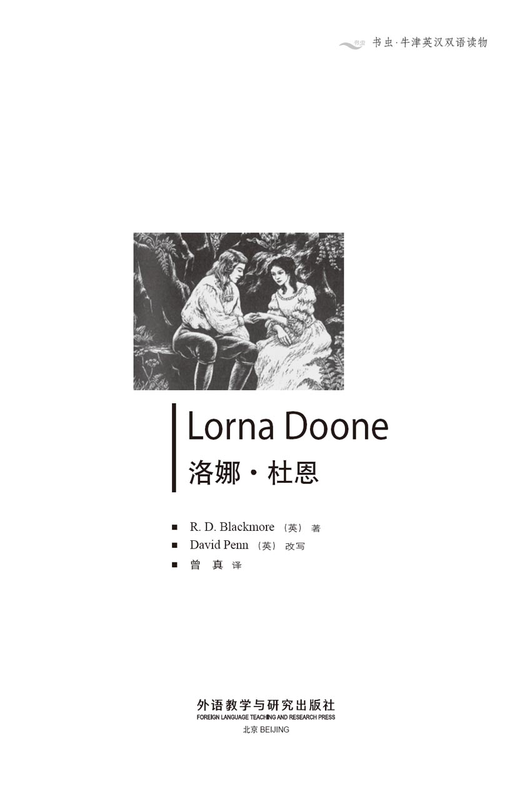
版权页
京权图字 01-2006-3302
Originally published by Oxford University Press, Great Clarendon Street, Oxford. © 2000
This edition is licensed for sale in the People's Republic of China only and not for export therefrom.
'Oxford' is a registered trademark of Oxford University Press.
只限中华人民共和国境内销售，不包括香港特别行政区、澳门特别行政区及台湾省。不得出口。
图书在版编目（CIP）数据
洛娜·杜恩 = Lorna Doone／（英）布莱克莫尔（Blackmore, R. D.）著；（英）佩恩（Penn, D.）改写；曾真译．—北京：外语教学与研究出版社，2007.9（2015.5 重印）
（书虫·牛津英汉双语读物）
ISBN 978-7-5600-6963-0
Ⅰ．洛… Ⅱ．①布…②佩…③曾… Ⅲ．①英语—汉语—对照读物②中篇小说—英国—现代 Ⅳ．H319.4：I
中国版本图书馆CIP数据核字（2007）第147276号
出版人： 蔡剑峰
责任编辑：田 娜
封面设计：孙莉明
出版发行：外语教学与研究出版社
社 址：北京市西三环北路19号（100089）
网 址：http://www.fltrp.com
版 次：2007年10月第1版
书 号：ISBN 978-7-5600-6963-0
* * *
凡侵权、盗版书籍线索，请联系我社法律事务部
举报电话：（010）88817519
电子邮箱：banquan@fltrp.com
法律顾问：立方律师事务所 刘旭东律师
中咨律师事务所 殷 斌律师
内容简介
内容简介
埃克斯莫尔的所有居民都对杜恩家族的人又恨又怕。当杜恩家族的人从杜恩山谷里骑马出来，在当地的农庄打家劫舍时，没人能阻挡他们。他们生性野蛮、体格强健，任何试图反抗他们的人很快便会招致杀身之祸。例如约翰·里德的父亲就是在骑马从集市回家的途中被他们所杀害。在那个没有法制的时代，只有国王的士兵们才能惩戒杜恩家族的人。但国王远在伦敦，而且他自己还有一身麻烦事。
约翰渐渐长大了，他在农庄上辛勤劳作，梦想着能替父报仇。但有一天，他遇见了洛娜·杜恩。她正是他梦寐以求的女孩——温柔、美丽、可爱——约翰情不自禁爱上了她。
可他怎么能娶仇人杜恩家的女孩呢？更何况还有个卡弗·杜恩——杜恩家族中最邪恶、最危险的人物——也在盘算着娶洛娜为妻……
LORNA DOONE
LORNA DOONE
The Doones are hated and feared all over Exmoor. When they ride out from Doone valley to steal and rob from the local farms, no one can stop them. They are wild, strong men, and anyone who tries to fight them will soon be murdered. Like John Ridd's father, shot down while riding home from market. And in these lawless days only the King's soldiers can punish the Doones, but the King is far away in London and has troubles of his own.
As John grows up, he works hard on the farm and dreams of revenge for his father's death. But one day he meets Lorna Doone. She is the girl of his dreams — gentle, beautiful, loving — and John loses his heart to her.
But how can he marry a girl from the hated Doone family? And then there is Carver Doone, the most evil and dangerous of all the Doones, who plans to marry Lorna himself...
目录
1．The end of school days
Lorna Doone
1
The end of school days
I am John Ridd, a farmer of the village of Oare in Somerset, and I have a story to tell you. It is about some things that happened to me in my younger days.
On the 29th November 1673, when I was twelve years old, John Fry, a worker from our family's farm, came to collect me from my school at Tiverton. He rode his horse up to the gate, leading my own little horse behind him. He was two weeks early, so I knew something was wrong.
'What are you doing here, John?' I asked him. 'It's not the holidays yet.'
He would not look at me. 'Oh, I know that, young Master Ridd. But your mother has saved the best apples, and cooked some wonderful cakes — all for you.'
'And Father? How is Father?' I said. It was usually Father who came to collect me, and it was strange that John Fry hadn't said anything about him.
'Oh, he's very busy on the farm just now,' he said. But John wasn't his usual self, and I knew this was a lie.
When I had packed my bags and said goodbye to my friends, I got on my horse and we started the journey home.
It was a long journey from Tiverton to Oare, and in places the road was very bad. John Fry would still not tell me why he had come to collect me, or answer my questions about Father. He looked unhappy about something, but I tried to hope for the best, as boys always do.
On the hill at the end of Dulverton town, we saw a big coach with six horses. In the front seat of the coach sat a foreign-looking woman, and next to her was a little dark-haired girl. I could see from the girl's soft skin that she was from a rich family, and I felt too shy to look at her more than once. She didn't look at me at all. Opposite them sat a very beautiful lady, in fashionable clothes, and next to her was a little boy, who was about two or three years old. The woman in the front, I thought, must be the servant of the family. I always remembered the family afterwards, because I had never seen people who were so grand, and so rich.
After Dulverton, the road got worse and worse, and soon we came into a very dangerous part of the country. This was Exmoor, a place of high, wild hills and deep valleys, and on Exmoor lived a family of robbers called the Doones. Everyone was afraid of them. They had robbed and murdered on Exmoor for many years, and had grown very strong. Now it was getting dark, and a fog was coming down. It was just the kind of night when the Doones would be out — and we were coming near to the path that they always used.
I wanted to ride fast, and cross the Doone path as quickly as possible, but John Fry knew better.
'Go slowly and quietly,' he said, 'if you want to see your home again.'
But when we came to the valley where the Doone path was, we heard the sound of horses.
'Hide!' said John, and we rode our horses off the path, and hid. But I wanted to look at the Doones, and went up onto a hill above the path. From there I saw a frightening sight.
Below me, moving quietly, were thirty horsemen. They were heavy, strong men, like all the Doones, and they were dressed for battle, carrying guns. Tied to their horses were all the things they had stolen. Some had sheep or other animals. But one man had a child across his horse — a little girl. She had on a very expensive dress, and I thought it was probably for this that the Doones had stolen her. I could not see whether she was alive or dead, but the sight of that child made me sad, and angry.
When we got home to the farm, my father did not come out to meet us, not even when the dogs ran up and made a lot of noise. 'Perhaps he has visitors,' I thought, 'and is too busy to come out.' But really I knew this was not true. I went away and hid. I didn't want anyone to tell me anything. I heard my mother and sister crying when they came out to find me, but I could not look at them.
Later they told me everything: my father had been killed. He had been murdered by the Doones.
It happened on his way back from the market at Porlock, on a Saturday evening. He was riding with six other farmers, and the Doones stopped them and asked them for their money. The other farmers passed their money over at once, but my father was brave. He rode at them, waving his long stick above his head. He managed to hit quite a few heads, but one Doone was waiting at the side of the road with a gun, and shot him.
* * *
Although we knew it was the Doones who had killed my father, it was useless even to ask the local judges or law officers to do anything about it. They were afraid of the robbers, too — or were even helping them. The Doones did almost anything they wanted on Exmoor.
They were not local people. They came from the north of England, where their leader, Sir Ensor Doone, had been a rich man, with a lot of land. But he argued with his cousin, the Earl of Lorne, who had even more land, and because of the trouble he caused, the King took away nearly everything that Sir Ensor owned. A proud, angry man, Sir Ensor refused to make peace with his cousin, and without his land and farms he became very poor. Then he found that people who had once been happy to know him now turned away from him.
After this, Sir Ensor lived his life outside the law. With his wife and family and a few servants, he looked all over the country for a place to live, where no one would know him, and he could start again. He chose Exmoor, where few people live, and found the perfect place to build a new home.
This was the place we now call Doone valley. It is a green valley far from any town, surrounded by steep, rocky mountains. At first Sir Ensor lived peacefully, and the local people were friendly, even bringing him presents of food. But as his sons grew older, they did not want to work as farmers, and they began to take whatever they needed from the local farms and villages. They carried off farmers' daughters to be their wives and give them sons, and so over the years the Doone family became bigger and bigger.
They began as robbers, but robbery had quickly led to violence and murder. The people of Exmoor were too afraid to fight back because the Doones were big, strong men and excellent fighters, and now only soldiers could hope to break into their valley and defeat them.
So there was no punishment for my father's murderer. We buried him quietly, and my mother was left without a husband, to manage our farm and take care of her three children. We were too young to be of much help to her yet. I was the oldest, then there was Annie, two years younger than me, then little Lizzie.
For a while, I wanted revenge. I was strong, and growing stronger every day. But my mother always calmed me down when I talked of revenge. She did not want to lose me too, and I used to worry about what would happen to her and my sisters if I were killed. We tried to get on with our lives, but we missed my father terribly. Sometimes my mother and Annie would remember him and cry, and sometimes John Fry saw me with tears in my eyes — which I said was because of the cold wind. Lizzie, though she was the cleverest of us all, was too young to really understand what had happened.
So the months passed. I learnt how to shoot with my father's gun, and I worked hard on the farm to help my mother.
master n. a title prefixed to the name of a boy 小主人；少爷
fashionable adj. characteristic of or influenced by a current popular trend or style 流行的；入时的
shoot v. kill or wound (a person or animal) with a bullet or arrow 射死；射伤
argue v. exchange diverging or opposite views heatedly 争吵；争执
earl n. a man with a high social rank 伯爵
surround v. be all around, encircle 环绕
carry off take away by force 抢夺
break into enter forcibly 强行闯入
violence n. behaviour involving physical force intended to hurt, damage, or kill 暴力行为
manage v. be in charge of; run 管理；经营
revenge n. something one does to punish someone who has done some injury or wrong 复仇
calm somebody down make somebody tranquil or quiet 使冷静下来
校园生活的结束
1．校园生活的结束
我叫约翰·里德，是萨默塞特郡奥尔村的一名农夫，我有个故事要讲给你听。那是年轻时发生在我身上的一些事。
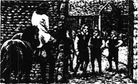
1673年11月29日，当时我十二岁，我家农庄上的一名工人约翰·弗赖伊来蒂弗顿我就读的学校接我。他骑马来到校门口，身后牵着我的小马。他比以往提前了两周，所以我意识到肯定出了什么问题。
“你到这儿来干吗，约翰？”我问他，“还没放假呢。”
他不愿与我对视：“哦，这我知道，里德少爷。不过你妈妈给你留了些最好的苹果，还做了很好吃的蛋糕——全都是给你的。”
“那父亲呢？父亲还好吗？”我问。平时一般都是父亲来接我的，但奇怪的是，约翰·弗赖伊对他只字未提。
“哦，他正在农庄上忙着呢，”约翰说。可他跟平时不太一样，我知道他在撒谎。
我收拾好行装，跟朋友们告别后，便骑上马，跟约翰一起踏上了回家的路。
从蒂弗顿到奥尔村路途遥远，有几段路面还很糟糕。约翰·弗赖伊还是不肯告诉我为什么来接我的人是他，也不肯回答同父亲有关的问题。他似乎为什么事而闷闷不乐，但我仍尽量往好的方面想，就像小男孩们通常所做的那样。
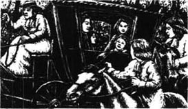
在达尔弗顿镇尽头的那座山上，我们看见了一辆六匹马拉的车。马车前座上坐着一个外国人模样的女子，她身边是个黑发小姑娘。从小姑娘柔嫩的皮肤能看出她出身富贵家庭，但我却害羞得不敢多看她一眼。而她根本就没有看我。她们对面坐着一位容貌出众、衣着入时的夫人，身边是个约摸两三岁光景的小男孩。我猜想坐在前座的女子一定是这家的仆人。此后我时常想起这一家人，因为我从没见过如此高贵富有的人家。
过了达尔弗顿，路况越发糟糕了，我们很快便来到了乡下最危险的一个地区。这里就是埃克斯莫尔，一个由高耸的荒山和深谷围成的地方。这儿居住着以抢劫为生的杜恩家族，所有人都对他们心怀恐惧。他们多年来一直在埃克斯莫尔劫掠、杀人，逐渐成了气候。天色正慢慢变暗，雾气也弥漫起来。这样的夜晚正是杜恩家族通常出来活动的时间——而我们正在接近他们平时出没的那条路。
我想骑快些，好尽快穿过杜恩路，但约翰·弗赖伊比我更有经验。
“慢慢走，别出声，”他说，“要是你还想见到自己家的话。”
但当我们来到杜恩路所在的山谷时，却听见了马蹄声。
“快躲起来！”约翰说道，我们骑马走下小路躲藏起来。但我想看看杜恩家族的人，于是便爬上了能俯视小路的一座小山。在那里，我看见了可怕的一幕。
我身下的小路上，三十名骑马的人正静悄悄地前行。跟所有杜恩家族的人一样，他们身材魁梧强壮；他们身披战衣，携带着枪支。马上捆着他们打劫的所有战利品，有的人还牵着绵羊和其他一些家畜。但其中一人的马背上却横放着一个小孩——一个小姑娘。她衣着华贵，我想这很可能就是杜恩家族的人将她抢来的原因。我看不清她是否还活着，但眼前这情形让我既难过又愤怒。
当我们回到农庄的家中时，父亲没出来迎接我们，就连那几条狗跑上前来汪汪乱叫时也不见他的踪影。“也许他有客人，”我想，“忙得没工夫出来了。”但其实我明白事实并非如此。我离开众人躲了起来，不希望任何人告诉我任何事。当母亲和姐姐出来找我时，我听见了她们的哭泣声，但却无法抬眼看她们。
后来，她们把一切都告诉了我：父亲被杀害了。他被杜恩家族的人给杀了。
那是一个星期六的晚上，父亲在从帕洛克的集市回来的路上遭遇了不测。他当时和另外六名农夫骑马同行，被杜恩家族的人拦路抢劫。其他农夫立刻将自己的钱交了出去，但我父亲很勇敢。他在头顶上空挥舞着自己的长棍子，骑着马朝对方冲了过去。他击中了好几个人的头，但杜恩家族有一个人端着枪守候在路边，开枪将他射死了。
* * *
虽然我们知道杀害父亲的是杜恩家族的人，但即使请求本地法官或检察长采取行动也毫无用处。他们也害怕那些强盗——有时甚至会成为强盗的帮凶。杜恩家族的人在埃克斯莫尔几乎为所欲为。
他们不是本地人。他们来自英格兰北部，其首领恩索尔·杜恩爵士曾是那里的富翁，拥有良田千顷。但恩索尔爵士跟拥有更多田产的堂兄洛恩伯爵发生了争执，而正因为他引起了纷争和事端，国王下令剥夺他的财产，使他变得几乎一无所有。高傲而愤怒的恩索尔爵士拒绝同堂兄和解，而失去了田产和农庄后，他变得一贫如洗。接着，他发现曾与他交好的人们如今对他唯恐避之不及。
此后，恩索尔爵士过上了目无法纪的生活。他带着妻子、家人和几名仆人找遍全国，寻觅一个没有人认识他的地方定居，以便从头开始。他选择了人烟稀少的埃克斯莫尔，并在这里找到了一处绝好的地方来建设新家园。
这就是现在被我们称作杜恩山谷的地方。这是个远离市镇、葱葱郁郁的山谷，群山环绕，山势陡峭，岩山林立。刚开始，恩索尔爵士过着平静的生活，当地人都很友善，甚至还馈赠给他食物。但他的儿子们长大后却都不愿当农夫，并且开始从当地的农庄和村落中抢劫他们所需的一切物品。他们强抢农家女为妻，为他们生儿育女。如此经年累月，杜恩家族日渐壮大了。
他们一开始只是抢劫，但抢劫很快就演变成暴行和杀戮。埃克斯莫尔的居民不敢反击，因为杜恩家族的人身材魁梧壮硕，擅长打斗。到如今，可能只有士兵有希望闯进山谷将他们打败。
因此，杀害我父亲的凶手没有得到任何惩罚。我们默默地将他埋葬了，而失去了丈夫的母亲得承担起经营农庄和照顾三个孩子的责任。那时我们还太小，帮不上什么忙。我是三个孩子中的老大，其次是小我两岁的安妮，最小的是莉齐。
曾有一段时间，我想替父报仇。我体格强健，而且一天比一天强壮。但当我提到报仇的事时，母亲总是让我冷静下来。她不想再失去我，而我则担心万一自己被杀，母亲和妹妹们将会怎么样。我们设法继续生活下去，但都非常思念父亲。有时妈妈和安妮会想起他而哭起来；有时约翰·弗赖伊会看见我眼中噙着泪水——我会说这是让冷风给吹的。莉齐虽然是我们中最聪明的一个，但她还太小，无法真正明白究竟发生了什么事。
日子就这样一天天过去了。我用父亲的枪学会了如何射击，同时帮着母亲在农庄上辛勤劳作。
2．A boy and a girl
2
A boy and a girl
Saint Valentine's Day, 1675, was the day that changed my life for ever, though I did not know it then.
I was fourteen. My mother had been ill and was not eating very well, so I went out to find something that she liked — good, fresh fish, caught from clear water.
I went first along the Lynn river that runs through our valley, then I turned into Bagworthy Water. Though I knew that this river led to Doone valley, I did not think about it. I went on catching fish and moving up the river, then suddenly found myself standing at the bottom of the cliffs outside Doone valley.
In front of me was a waterfall, a steep hill of smooth, fast-moving water. It was a wild, lonely place, surrounded by tall trees, and it was already getting late. I knew I should turn for home — but I also wanted very much to see what was at the top of that waterfall. It looked a dangerous climb, but if I did not climb it, I would always remember that I was too frightened to do it.
So I climbed.
The water beat against my legs, once knocking me down so that I nearly drowned, but I pulled myself up and went on. When I reached the top at last, my arms and legs were aching and my feet were cut by the rocks. I fell in the grass, exhausted.
When I opened my eyes, for a few seconds I didn't know where I was. But, kneeling beside me, touching my face with a leaf, was a very young girl.
'Oh, I'm so glad,' she whispered softly, as I sat up and looked at her. 'Now you'll try to be better, won't you?'
I had never heard as sweet a sound as this girl's voice, nor seen anything as beautiful as the large dark eyes that watched me, full of care and wonder. I stared at her without speaking, noticing her long, shining black hair.
'What is your name?' she said, 'and how did you get here, and what have you got in your bag?'
'They're fish for my mother,' I said. 'Very special fish. But I'll give you some, if you like.'
'Dear me — you re so proud of them, when they're only fish! But look at your feet — they're bleeding. Let me tie something round them for you.'
'Oh, I'm not worried about them,' I said bravely. 'My name's John Ridd. What's your name?'
'Lorna Doone,' she answered, in a soft voice, and looked down at the grass. She seemed afraid of her own name. 'Lorna Doone. Didn't you know?'
I stood up and touched her hand, and tried to make her look at me, but she turned away. I felt sorry for her — and even more sorry when she started to cry.
'Don't cry,' I said. 'I'm sure you've never done any harm. I'll give you all my fish, Lorna, and catch some more for my mother.'
But she looked so sad, with the tears running down her face, that my heart ached for her and I gave her a kiss. At once my face turned red — here was I, just a simple farmer's boy, but she, though young, was clearly a lady and far above me.
She turned her head away, and I felt I should go. But I couldn't. She turned back to look at me.
'You must go,' she said. 'They will kill us if they find us together. You have found a way up into the valley, which they could never believe. You must go now, but when your feet are better, you can come and tell me how they are.' She smiled at me, and I could see that she liked me.
We talked for a while longer, but then a shout came down the valley. Lorna's face changed from playfulness to fear. We whispered our goodbyes, then Lorna ran away from me and lay in the grass, pretending to be asleep. I hid behind some rocks, and saw twelve cruel-looking men come walking down the valley, looking for Lorna. One of them — the biggest of them all, a man with a long black beard — found her. 'Here she is,' he said. 'Here's our little Queen.' He picked her up and kissed her so hard that I heard him. Then he put her on his shoulders, and carried her away. But as she went up the valley on the back of this frightening man, Lorna turned and secretly held up her hand to me.
Now I had to find a way out of the valley and get home. I almost broke my neck several times, climbing down the mountain, and I did not get home until long after dark. My mother was angry with me, but I would not say where I had been.
After my adventure, I thought a lot about the strange little girl I had met in Doone valley. But I never really imagined I would go back to the valley again. So after a while I thought less about her, and got on with my work on the farm.
exhausted adj. completely tired 精疲力竭的
少年偶遇
2．少年偶遇
1675年的圣瓦伦廷节是改变了我人生的一天，虽然我当时并没有意识到这一点。
当时我十四岁。母亲病了一场，胃口不太好，于是我出门去找一些合她胃口的东西——从清水里抓来的新鲜可口的鱼。
我先沿着穿过村庄的林恩河往前走，然后转向巴格沃思河。虽然我明知道这条河流往杜恩山谷，却没有多想。我顺河而上边走边抓鱼，过了一会儿却猛然发现自己站在了杜恩山谷外的峭壁下。
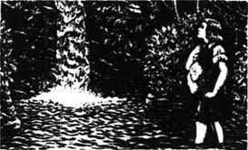
在我面前悬着一道瀑布，一挂平滑迅疾的水流从陡坡上倾泻下来。这里荒凉僻静，四面环绕着高大的树木。夜幕已开始渐渐降临。我知道自己该掉头回家了——但我也很想看看瀑布顶上是怎样一番光景。看样子要爬上去很危险，但要是我不这么做，肯定会一直为自己的怯懦而耿耿于怀。
于是我开始往上爬。
水击打着我的双腿，有一次还将我掀翻下去，差点淹死。但我奋力站起身，继续往上爬。当我终于爬到山顶时，四肢阵阵酸痛，双脚已被岩石划破。我精疲力竭地倒在草地上。
当我睁开双眼时，一时间竟不知自己身在何方。但此时有个小女孩正跪在我身边，用一片树叶拂动着我的脸庞。
“哦，我真高兴，”我坐起身望着她的时候，她柔声低语道，“现在你会努力让自己好起来的，对吧？”
我从没听过像这个小女孩的嗓音这般甜美的声音，也从没见过如此美丽的黑色的大眼睛。这双眼睛正关切而好奇地注视着我。我一言不发地凝望着她，注意到了她那头乌黑闪亮的长发。
“你叫什么名字？”她问，“你怎么到这儿来的？你的袋子里装的是什么？”
“那是给我妈妈的鱼，”我说，“是种很特别的鱼。不过如果你喜欢，我可以给你几条。”
“天哪——不过是些鱼，值得你这么为它们感到骄傲！再看看你的脚——它们在流血！让我给你包扎一下吧。”
“哦，我可不担心我的脚，”我勇敢地说，“我叫约翰·里德。你叫什么名字？”
“洛娜·杜恩，”她轻声答道，低下头望着草地。她似乎害怕说出自己的名字。“洛娜·杜恩。难道你没听说过吗？”
我站起身碰了碰她的手，试着让她抬起头看我，但她扭开了身子。我为她感到难过——而当她开始哭泣时，我就愈发难过了。
“别哭，”我说，“我相信你从没干过什么坏事。我把所有的鱼都给你，洛娜，我会替我妈妈另外捉几条的。”
但她神情悲切，泪水不断地从脸颊上淌落下来，让我不免为之心疼。我吻了她一下，脸立刻涨得通红——我只是个普通农夫的儿子，而她虽然还年幼，却显然是个淑女，地位远在我之上。
她扭过头去。我觉得自己该走了，却欲行又止。她转过身望着我。
“你必须走了，”她说，“要是他们发现咱俩在一起，会杀了我们的。你竟然找到了一条进入山谷的路，他们怎么也不会相信的。你现在必须马上离开，不过等你的脚好些以后，可以来告诉我它们恢复得怎么样了。”她冲我浅浅一笑，我能看出她很喜欢我。
我们又聊了一会儿，突然从山谷下传来一声呼喊。洛娜活泼的脸立刻变得惊惶不安。我们低声道了别，洛娜从我身边跑开，躺到草地上假装睡着了。我躲在一堆岩石后，看见十二名凶神恶煞的男人沿着山谷走过来寻找洛娜。其中一人——那个最强壮的、蓄着黑色长胡子的家伙——找到了她。“她在这儿，”他说，“我们的小女王在这儿。”他将她抱起来，使劲亲了一下，那动静大得连我都听见了。然后他把她驮上肩头带走了。当那个可怕的男人驮着她走进山谷时，洛娜转过头悄悄冲我扬起了手。
现在我得想办法走出山谷回家去。下山的时候，我有好几次都差点摔断脖子；直到天色很晚了，我才回到了家。尽管妈妈对我很生气，我还是不肯说出自己究竟去了哪里。
那次冒险后，我曾多次想起在杜恩山谷里遇见的那个陌生的小女孩，但我从没真想过要重返山谷。因此，过了一阵子，我对她思念稍减，继续在农庄干活。
3．Back to Doone valley
3
Back to Doone valley
The months and the years went by, and I grew very tall and strong, as my father had been. By the time I had finished growing, I was bigger than any man on Exmoor, and could pick up John Fry with one hand and hold him in the air — until he begged me to put him down.
My sister Annie grew more and more beautiful every year, with her wide blue eyes and soft brown hair. She was so kind and so gentle that everyone loved to be with her, and it is easy to understand why my mother's cousin, Tom Faggus, fell in love with her.
Tom Faggus was someone that our family was both proud and ashamed of. For a time he was one of the most famous robbers in England, and people still tell the stories of his adventures all over the country. He had been an honest farmer once, but a rich man had used the law to steal his farm, and after that Tom took his revenge on all rich men he met on the roads. Perhaps that was why he was so popular with the people, as he stole only from the rich, gave generously to the poor and the sick, and never hurt anyone in his life.
While I was still a boy, he came to our farm one day, asking my mother for food and a bed for the night. At first my mother told him to go away, fearing that we children would learn bad ways from him, but in the end she agreed.
'You may be a bad man in some ways,' she said to him, 'but there are far worse than you. So come and sit by the fire, and eat whatever we can give you.'
Tom always had a smile and a good word for everybody, and was great fun to be with. All the time he was with us, I saw Annie looking at him very kindly, and over the years we had many more visits from him.
As for Lizzie, I never thought anyone would fall in love with her! She was small and thin, and perhaps a little too clever — you never knew what she was going to say next. But I should not talk in this way about my own sister.
My mother didn't seem to grow any older, and was still pretty, and as good-hearted as ever. She had never forgotten my father, and as the years went by, she still sometimes cried for him.
In all this time, if I thought of Lorna Doone at all, it was only as a kind of dream. And the Doone men went on robbing and killing, just as they pleased.
Then one Christmas, when I was twenty-one, my Uncle Ben was robbed by the Doones on his way across Exmoor. He had been coming to visit us, and when he didn't arrive, my mother sent me out to look for him. I found him on a high, lonely path, tied on to his horse with his nose to its tail. He was very angry, and wanted revenge on the Doones. He asked me to show him where they lived, so that he could learn the best way to attack them 'when the time was right'. So a day or two later I took him up into the mountains that looked down on the valley.
I had not been back this way since I was fourteen, and on the way, I thought of the girl I had met in this valley — of her lovely dark eyes, her sweet smile, her sadness... and her loneliness.
At the top of a steep cliff, we looked down into the long, green Doone valley. At either end was a narrow gap in the mountain walls. At the further end was the waterfall which I had climbed seven years before, and at the other was what we called the Doone-gate. This was two rocky cliffs facing each other, with only a narrow path between them. It was like the gate of a castle, and it seemed impossible to break into the valley. But Uncle Ben saw a way.
'Do you see how you could attack them?' he said. 'If you put big guns along the cliffs on both sides, and fired down into the valley, you could defeat the Doones in half an hour.'
But I was not listening to him. I was looking across to the waterfall end of the valley, and a little figure in white walking there, someone who walked with a very light step. My heart began to beat more quickly, and the blood came to my face. In seven years I had half-forgotten her, and she would never remember me, I thought. But at that moment, once and for all, I saw my future in front of me: Lorna Doone.
On the way home I was quiet, and Uncle Ben asked me many times what was wrong with me. But I could not tell him. The truth was, I had decided to go back into Doone valley.
I waited until Saint Valentine's day — the exact day when I had first entered the valley. Again, I followed the river, and again I climbed the waterfall. Although I was seven years older, the climb was not easy. When I got to the top, I looked around me carefully.
In the early spring sunshine, the valley was beautiful. As I looked at the stream and the fields of grass on either side of it, I forgot about any dangers — and then I heard someone singing, in a beautiful voice. At first I hid behind a rock, but when I looked out, I saw the lovely sight of Lorna Doone coming towards me, along by the side of the stream. Her beauty frightened me. How could I — only a farmer — talk to her? But something seemed to pull at me and I came out from behind the rock.
At first, she turned to run away, not knowing who I was, but then I said, 'Lorna Doone!' and she seemed to remember me. A smile broke out on her face.
'I'm John Ridd,' I said, 'the boy who gave you those beautiful fish, seven years ago today.'
'Oh, yes — the boy who was so frightened that he hid behind those rocks. I remember.'
'And do you remember how kind you were, and how you wanted to help me? And then you went away, riding on a big man's shoulders, and pretending you had never seen me. But you looked back and waved at me.'
'Oh, yes. I remember everything, because it isn't often I see anybody, except — I mean... Well, I just remember, that's all. But don't you remember, sir, how dangerous this place is?'
But I couldn't answer her. She had kept her eyes on me all the time — large eyes, of a softness and brightness and beauty that took my breath away. I felt love taking hold of me — a love too deep and too strong for words. How could I explain feelings that I did not really understand myself?
She turned her eyes away from me. 'I don't think you can possibly know, John Ridd, the dangers of this place, or what its people are like.'
I could see that she herself was very frightened. She was trembling, from fear that someone might see me while I was there, and hurt me. To tell the truth, I also grew afraid, and thought I had better go and say no more, until the next time I came.
I touched her white hand softly. 'Don't be afraid,' I said. 'I'll go now, but I'll come again soon, and bring you some fresh eggs from our farm.'
She reminded me again of the danger. 'But,' she went on, 'it seems that you still remember your secret way in,' and she smiled at me kindly.
fall in love with to start to love someone or something very much 爱上
have a good word for somebody to praise somebody 替某人美言几句
face v. be positioned with the face or front towards or in a specific direction 面对
defeat v. win a victory over 打败
to tell the truth to be frank 说实话
重返杜恩山谷
3．重返杜恩山谷
日复一日，年复一年，我渐渐长得十分高大强壮，就像父亲当年那样。等到我长成型时，比埃克斯莫尔所有的男人都魁梧。我能单手托起约翰·弗赖伊，并把他举到空中——直到他哀求我将他放下。
我的妹妹安妮长着一双蓝色的大眼睛和一头柔软的褐色头发，出落得一年比一年美丽。她为人温柔善良，人人都喜欢跟她在一起。这就不难理解为什么母亲的表弟汤姆·费格斯会爱上她了。
汤姆·费格斯是个让我们家人既自豪又惭愧的人物。他曾一度是英格兰地区最出名的强盗之一，至今人们仍在讲述他在全国各地冒险的故事。他原本是一名老实巴交的农夫，但一个有钱人钻了法律的空子夺取了他的农庄，此后汤姆就开始向他遇到的所有有钱人进行报复。这也许就是他为何如此受欢迎的原因：他劫富济贫，而且一生从未伤害过任何人。
当我还是小孩子的时候，有一天他来到了我们的农庄，请求母亲给他些食物，并让他留宿一夜。起初，母亲决意赶他走，担心我们这些孩子会被他带坏，但最终她还是同意他留下了。
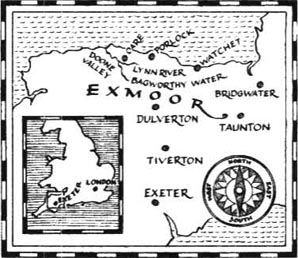
“你在某些方面也许是个坏人，”她对他说，“但还有人比你坏得多。还是过来坐在火炉边上吧，随便吃点我们能给你的东西。”
汤姆总是面带微笑，对每个人都赞美有加，跟他在一起很有意思。他跟我们在一起时，我总是看见安妮非常温柔地望着他，而这些年来，他来做客的次数越发频繁了。
说到莉齐，我从来没想过会有人爱上她！她身材瘦小，而且或许还聪明得有些过头了——你永远也不知道她下一句话会说什么。但我不该这么说自己的妹妹。
母亲似乎一点都没变老，仍然同过去一样漂亮、善良。她从没忘记过父亲，虽然这么多年过去了，她有时仍会为他哭泣。
一直以来，就算我曾想起过洛娜·杜恩，也只不过像是一场梦。而杜恩家族的人则继续随心所欲地抢劫和杀戮。
我二十一岁那年的圣诞节，本叔叔在穿过埃克斯莫尔的路上遇到杜恩家族的打劫。他原本是要来我家做客，却一直没到，于是母亲便派我出去找他。我在一条地势较高的偏僻小路上找到了他，他鼻子贴着马尾巴被绑在马背上。他怒火冲天，想找杜恩家族的人报仇。他让我把杜恩家族的老巢指给他看，以便一旦“时机成熟”，能有最好的方法去袭击他们。于是一两天后，我带着他爬上了能俯瞰山谷的那条山脉。
十四岁以后，我就再没走过这条路。路上，我想起了曾在这个山谷里遇见的那个女孩——想起她可爱的黑眼睛、甜美的微笑、淡淡的忧伤……和孤寂。
我们站在陡峭的悬崖顶上，俯瞰脚下狭长葱郁的杜恩山谷。山谷的两端各有一道狭窄的缺口。较远的那头是我七年前曾攀登过的瀑布，而另一头则是被我们称为杜恩大门的地方。那里有两道石崖相对而立，中间只有一条狭窄的小路，就像城堡的大门，要想闯进山谷似乎是不可能的。但本叔叔看出了一条途径。
“你看出该如何袭击他们了吗？”他问道，“只要沿着两侧的悬崖架设大炮朝山谷里开火，就能在半小时内把杜恩家族打败。”
但我没听进去。我正望向山谷尽头的瀑布。那里有个身穿白衣的娇小身影在走动，脚步十分轻盈。我的心跳开始加速，血液升腾到脸庞上。七年来，我差不多已将她遗忘了，而且我想她也绝不会记得我。但就在那一刻，我终于看到了自己的未来：那就是洛娜·杜恩。
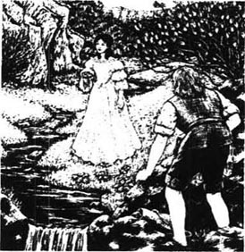
在回家的路上，我一言不发。本叔叔多次问起我究竟怎么了，我却无法如实相告。事实上，我已决定要重返杜恩山谷。
我一直等到圣瓦伦廷节——这一天正好是我当年第一次进山谷的日子。我再次沿着河流前行，攀上了瀑布。虽然我比当年长大了七岁，要爬上去仍然不太容易。我爬上瀑布顶端后，小心地环顾四周。
在早春阳光的照耀下，山谷里景色秀美。我望着溪流和两岸的草地，忘记了所有的危险——接着，我听见有人在用美妙的歌喉吟唱。起初我躲到了一块岩石后，但当我探出头张望时，看见可爱的洛娜·杜恩正沿着岸边朝我走过来。她的美貌令我心惊。我——一名普普通通的农夫——怎么配跟她说话呢？但冥冥中似乎有人牵着我，我从岩石后走了出来。
一开始，她不知道我是谁，掉头便跑。我连忙喊了一声：“洛娜·杜恩！”她似乎记起了我，脸上霎时露出了微笑。
“我是约翰·里德，”我说，“那个在七年前的今天给你那些漂亮的鱼的男孩。”
“哦，没错——那个吓得躲到那堆岩石后头的男孩。我想起来了。”
“那你还记不记得你当时有多善良、多想帮助我？然后你假装从没看见过我，坐在一个大个子男人的肩膀上离开了。但你当时向后看了看，还冲我挥了挥手。”
“哦，是的。我全都记得，因为我很少见到生人，除了——我是说……呃，反正我还记得，没别的。可是，先生，难道你不记得这个地方有多危险了吗？”
我无法回答她的问题。她一直望着我——那双明亮的大眼睛温柔而美丽，让我透不过气来。我感到爱情将我紧紧抓住——这种爱如此深切和强烈，简直无法用言语来形容。我怎么能解释连自己都无法真正理解的感情呢？
她将目光从我身上移开：“约翰·里德，我想你不可能知道这里有多危险，这里的人究竟是怎样一副嘴脸。”
我能看出她十分恐慌。她一直瑟瑟发抖，生怕有人看见我在这儿并加害于我。说实话，我也渐渐害怕起来，觉得自己最好还是什么都别说了，先离开这里，等下次来再说。
我轻抚了一下她白皙的手。“别害怕，”我说，“我这就走。但我很快会再来，还会从我家农庄给你带一些新鲜鸡蛋来。”
她再次提醒我当心危险。“但是，”她接着说，“看样子你还记得进山谷的秘密通道，”说完她冲我温柔地笑了笑。
4．Lorna's story
4
Lorna's story
I went home with my head in the clouds, and my heart on fire with love. All that week I could not stop thinking about Lorna, and I did my work on the farm in a dream. Soon, I went to see her again.
This time when she saw me, she came quickly towards me. 'Mr Ridd, are you mad?' she said. 'There are men on guard all round the valley. We must hide at once.' She took my hand and led me to her secret place, which was a kind of room hidden in the rock of the mountain. It was a green, peaceful place, open to the sky above, but the only way into it was through a narrow entrance in a cave.
I gave her the eggs I had brought her as a present, and at this she began to cry.
'What have I done?' I asked.
'It's nothing you've done,' she said. 'It's just a sadness that I feel when I see anything from the world outside — and you've been very kind, and I'm not used to kindness.'
I wanted to put my arms around her, and kiss her, but I knew this would be wrong. So I sat and listened, and I think this made her like me more, because she began to tell me her life story. She told me everything — everything except what her feelings were towards John Ridd.
'Only two people ever listen to me, or try to help me,' she began. 'One is my grandfather, Sir Ensor Doone, and the other is my uncle, a clever man, whom they call the Counsellor. My grandfather is a very old and very hard man — except with me. He seems to know what is right and wrong, but not to want to think about it. And the Counsellor smiles a lot and talks about what is right and good — but he never does a good thing himself.'
'My Aunt Sabina used to take care of me, and she taught me very carefully. She was a good person, honest and kind, and when she died, it was like losing a mother. Now there is only one woman I can talk to — Gwenny, my servant. She is my closest friend.'
'I don't remember my father, but they say he was the eldest son of Sir Ensor Doone, and the bravest and best of them all. They say, because of that, that I am their "Queen".'
'I dream of a world outside this one, Mr Ridd — a world of peace. This valley is green and beautiful, but all around me is violence and robbery, and stupid behaviour. I can't come down to their level. I can't forget myself and live like them. And strange questions come to me, that they can never answer. When I try to think about the past, about my early childhood, I can't remember anything. I want to know what I am, and why I am in this place. I suppose you think that's strange. Perhaps people who are happy and at peace don't need to ask questions like those.'
Here, Lorna began to cry again. I could think of nothing to say, but I dried her eyes for her.
'Mr Ridd, I am ashamed and angry at myself for talking so much, like this. But you, who have a mother who loves you, and sisters, and a quiet home, can't tell how lonely it is to live as I do.'
'I have this secret place to come to, because I begged them for it. Only grandfather and the Counsellor come here — and sometimes Carver, the Counsellor's son. No one in the valley is as strong or brave as him. But he is not like his father. He is rough and violent, always quick to be angry, and will listen to no opinion except his own. There is talk of him wanting to marry me, but I would rather die than marry Carver Doone.'
'Now you see how unhappy I am here. I would escape, and go anywhere, but I know it would hurt my grandfather.'
This was too much for Lorna, and she couldn't tell me any more. She broke down and cried. I talked to her gently and kindly until she began to worry again about the danger I was in. I said I would come back and see her again, but she made me promise not to come back for another month — so that I would not add to her problems with fears about me. During that time, we agreed that if she were in any danger, she would put a dark coat over a white rock, near her secret room. I would be able to see this from a hill above the valley, and then I would come.
with one's head in the clouds full of idealistic dreams; out of touch with reality 想入非非地
dream of v. think of something that you would like to happen 向往；梦想
rough adj. not gentle; violent or boisterous 粗鲁的
escape v. break free from confinement or control 逃走
洛娜的故事
4．洛娜的故事
我心中燃烧着爱的烈火，想入非非地回到了家。整整那一周，我都无法停止对洛娜的思念，像梦游一般在农庄上劳作。很快，我又去见她了。
这一次她看见我时，飞快地朝我走了过来。“里德先生，你疯了吗？”她说，“山谷周围全都有人站岗，我们必须马上躲起来。”她拉着我的手，将我带到她的秘密藏身之处。那是隐藏在山上岩石间的一小块地方。那里树阴浓密，十分幽静，抬头就能看见天空，而唯一的通道就是山洞的一条狭窄的入口。
我将带来的鸡蛋作为礼物送给了她，她看到这情形立刻哭了起来。
“我做错什么了吗？”我问。
“跟你没关系，”她说，“只是当我看见来自外面世界的东西时，就会有一种悲伤的感觉——而你又一直对我这么好，我不太习惯有人对我好。”
我想伸出双臂拥她入怀、亲吻她，但我知道这样做是不对的，于是便坐下来听她说话。我想这样让她更喜欢我了，因为她开始给我讲述她的故事。她把一切都告诉了我——除了她对约翰·里德的感觉。
“只有两个人会听我说话，会尽量帮助我，”她娓娓道来，“一个是我的祖父恩索尔·杜恩爵士，另一个是我的叔父，他是个聪明人，大家都叫他亲王。我祖父是个年迈而且极难相处的人——对我例外。他似乎知道何为善恶对错，但却不愿去想。亲王则总是笑呵呵的，喜欢高谈阔论何为正义善良——但自己却从不干什么好事。”
“萨比娜阿姨过去时常照顾我，还非常用心地教导我。她是个好人，为人诚实善良。她过世的时候，我难过得像失去了生母。现在我只能跟一个女人说话了——那就是格温妮，我的女仆。她是我最亲密的朋友。”
“我对我父亲没什么印象，但听他们说，我父亲是思索尔·杜恩爵士的大儿子，也是他最勇敢、最出色的儿子。他们说，正因为如此，我就是他们的‘女王’。”
“我向往着一个不同于这里的世界，里德先生——一个祥和的世界。这片山谷青翠美丽，但我身边却充斥着暴力、抢劫和愚蠢的行为。我不能沦落到他们那种地步。我不能迷失自我，像他们那样生活。而且我会想出一些他们永远也无法回答的怪问题。每当我试图回忆过去、回忆自己的孩提时代时，我总是什么都想不起来。我想知道自己是什么人、为什么会在这里。我想你一定觉得这很奇怪。也许快乐平和的人不需要问这种问题。”
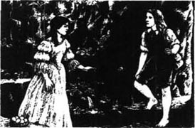
说到这儿，洛娜又开始哭泣了。我不知道该说什么才好，只能为她擦干眼泪。
“里德先生，真是惭愧，我唠唠叨叨说了这么多话，真有点气我自己。但你有疼爱你的母亲，有妹妹们，还有一个安宁的家，你无法了解像我这样生活有多么孤寂。”
“我向他们苦苦哀求，才得以来到这个隐秘的地方。只有祖父和亲王会来这儿——亲王的儿子卡弗偶尔也会来。山谷里没人比他更强壮勇猛。但他并不像他的父亲。他粗暴易怒、一意孤行。有传言说他想娶我，但我宁死也不愿嫁给卡弗·杜恩。”
“现在你明白我在这儿有多么不开心了吧。我可以逃走，到别的地方去，但我知道这样会伤祖父的心。”
这些话极大地触动了洛娜的伤心处，她已经无法继续对我讲下去了。她情绪失控，哭了起来。我温柔而亲切地安抚着她，直到她再次为我身处险境担忧起来。我说会再回来看她，但她要我保证一个月内不再来——免得她除了自己的烦恼外，还要为我担心。那一次，我们约定如果她遇到什么危险，就在她的秘密山洞附近的一块白色岩石上放一件深色外套。我能从山谷上面的小山上看见这外套，然后就会赶过来。
5．To London
5
To London
But I was not able to see Lorna again as soon as I had hoped. Before the month had passed, I was called away from home, in a very strange and unexpected way.
One afternoon, as I was outside the house feeding the horses, a stranger rode up to our gate and shouted at me. He was a tough-looking, hard-faced man, about forty years old, with small, quick eyes, and he was dressed very differently from the way we dress in Exmoor. He said he was looking for Plover's Barrows farm, and a man called John Ridd. When I told him he had found them both, he introduced himself as Jeremy Stickles, a servant of the King, and he gave me a letter. I looked at him in alarm, but he said there was nothing in the letter to worry me.
At the top of the letter, my name was written in large letters. I read:
TO JOHN RIDD:
This letter is to order you to appear before the King's judges in London, and tell them anything you know about some matters which may be harmful to the King and the country.
Jeremy Stickles seemed very pleased by my fear and surprise at the letter, but he said again that no one was going to hurt me. All I had to do was tell the truth.
When my mother read the letter, she became very worried and began to cry. She wondered how the King had heard of me, and what he wanted to do with me. But Mr Stickles, who wasn't really as hard as he seemed, explained everything carefully to her. He told her that the King only knew of me because the stories of my great size and strength had reached even London. He had heard I was a good man, and thought I could help him, that was all.
This made my mother feel better, but I was very unhappy. I was thinking of Lorna. How could I tell her I was going away? I had promised not to go back to the valley for a month, and that was still a few days away. But how terrible it would be if she came to look for me at the end of the month, and I was not there! I would have to break my promise and go before the agreed time.
Mr Stickles was happy to stay at the farm for one or two days, to try our good Exmoor food. So I used the time to look for Lorna. But I saw nothing of her in the valley, and no signal that she needed me. There was nothing else I could do. Mr Stickles wanted to go, and I had to leave for London without seeing her.
* * *
A journey to London was both long and dangerous in those days, because of all the robbers on the roads. As I said goodbye to my mother and sisters and took my last look at the farmhouse, I felt very miserable. But Jeremy Stickles was a good companion. As we rode, he told me many amusing stories of London life, and we became the best of friends.
I did not like London. It was a crowded, dirty place, not at all like Exmoor — and, even worse, I had to wait more than two months before the King's judges were ready to see me. There was a lot of trouble in London at that time, with arguments between the King and the City of London. Nobody had time to talk to John Ridd, but I was not allowed to leave and go home. At last, I was called to see Judge Jeffreys.
Jeremy Stickles had told me about Judge Jeffreys. He was the King's chief judge, and there were terrible stories about him. He became very angry if anyone argued with him, and he had sent many of the King's enemies to their deaths.
In the room I walked into, there were three men sitting on high seats, and they were dressed in very rich clothes. In front of each of them was a desk, with pen and paper. The man in the middle seemed to be the most important. He was a big, heavy man, with a square chin and a kind of fire in his eyes. He was a man that almost anyone would be afraid of. This was certainly Judge Jeffreys.
He gave me a terrible stare, and asked me who I was and where I came from. When I had told him, he said: 'Well done, John Ridd. You have answered me without fear. I remember this matter now. I will ask you some questions.' He looked at me more closely. 'In Exmoor,' he said, 'there is a family of robbers. Is that true?'
I told him it was.
'And why isn't your local judge doing anything about them?'
'I suppose he's afraid, my Lord. The robbers are very strong, and their valley is hard to attack.'
'But they must still answer to the law!' Judge Jeffreys said. 'What's the name of these people, and how many of them are there?'
'They are the Doones, and we think there are about forty men in the valley.'
'I will do something about these thieves,' he said. 'Perhaps I will come down to the west myself.' But then he stared hard at me again, and asked: 'Is there any sign, in Exmoor, of any dislike of the King?'
'No, my Lord. We don't know much about him.'
'That's a good answer,' he laughed. 'But the King knows he has enemies in the country. I see you know nothing about them, though. You're a good man, John Ridd. Keep out of trouble. Keep away from the King's enemies, and from the Doones as well, and you will be safe. I was going to use you as a spy, but I see you're too honest. I will send someone else. But never tell anyone what I've said to you.' Here he stared at me very angrily, but when he saw he had frightened me enough, he smiled again. 'Now go home, John. I will remember you — and I don't think you will forget me.'
I had no money left to hire a horse for the journey back to Exmoor, so I had to walk the whole way. It took me seven days, and I was very glad to get home again.
alarm n. anxious or frightened awareness of danger 忧虑；惊恐
signal n. a gesture, action, or sound conveying information or an instruction 信号
companion n. a person with whom one spends time 同伴
amusing adj. causing somebody to laugh or smile; entertaining 好笑的；有趣的
keep away from to avoid going somewhere or seeing somebody 离……远点
伦敦之行
5．伦敦之行
但是，我没能像预期中那么快与洛娜再次相见。一个月的时间还没过去，我就被人莫名其妙地从家里叫走了。
有一天下午，我正在屋外喂马，一个陌生人骑马来到我家大门口，冲着我大喊。那人长着一张冷酷刻板的脸，约摸四十岁上下，小眼珠转得飞快，衣着打扮跟埃克斯莫尔居民迥然不同。他说自己正在找普罗沃斯巴若斯农庄和一个名叫约翰·里德的人。当我告诉他二者都近在眼前时，他自我介绍说，他叫杰里米·斯蒂克尔斯，是国王的仆人。接着，他递给我一封信。我惶恐地望着他，但他说信中没什么会让我担忧的事。
信纸顶端用很大的字体写着我的名字。信上写道：
致约翰·里德：
此信命令你前往伦敦拜见国王的法官们，并向他们如实禀报你所知道的可能对国王和国家不利的事。
看到我读信时所表现出的恐惧和惊讶，杰里米·斯蒂克尔斯似乎感到很满意，但他重申没人会伤害我，我所需要做的只是说出真相。
当母亲读到这封信时，她担心得哭了起来。她很想知道国王是如何得知我的存在的，以及他想把我怎么样。但斯蒂克尔斯先生其实没有看上去那么刻板，他仔细地向母亲解释了一切。他告诉她，国王之所以知道我的存在，只是因为关于我体型庞大、力气过人的传闻已经传到了伦敦。国王听说我是个好人，觉得我能帮助他，就这么简单。
这一席话让母亲感觉好些了，但我却闷闷不乐。我在想洛娜。我如何才能将自己要走的消息告诉她呢？我向她保证过一个月之内不会回到山谷，而现在离一个月的期限还有几天。可万一她在这个月底来找我，而我却不在那儿，那该有多糟糕啊！我只能不守承诺，在约定期限前到那儿去了。
斯蒂克尔斯先生很高兴能在农庄呆上一两天，尝尝我们埃克斯莫尔的美食。于是我便利用这段时间来寻找洛娜。但我在山谷中没见到她的半点身影，也没见到她需要我帮助时用的信号。我无计可施。斯蒂克尔斯先生想上路了，而我只好在没见到洛娜的情况下前往伦敦。
* * *
在那个年代，去往伦敦的路途遥远而危险，因为沿途不时有强盗出没。我同母亲和妹妹们告别，最后看了一眼农庄的房子，心里非常难受。幸好杰里米·斯蒂克尔斯是个不错的旅伴。我们一路骑马前行，他给我讲了很多关于伦敦生活的趣闻，我们成了最好的朋友。
我并不喜欢伦敦。那是个拥挤而肮脏的地方，跟埃克斯莫尔截然不同——而更糟糕的是，我还得再等两个多月国王的法官们才能接见我。当时伦敦一片混乱，国王和伦敦市民之间纠纷不断。没有人有空搭理约翰·里德，而我也没获准离开伦敦回家。最终，杰弗里斯法官召见了我。
杰里米·斯蒂克尔斯给我描述过杰弗里斯法官。他是国王的首席法官，有不少关于他的令人心惊胆颤的传闻。要是有人胆敢同他争论，他就会暴跳如雷。他还曾经把国王的许多敌人送上了断头台。
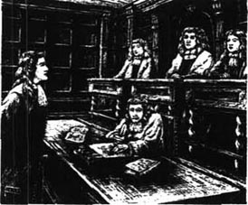
我走进了一个房间，里面有三位衣着华贵的人坐在高高的椅子上，每人面前都有一张书桌，上面摆放着纸笔。中间那人看样子是最重要的人物。那是一位身材高大壮硕的男子，方下巴、目光如炬，几乎人人见了他都会惧怕三分。这位一定是杰弗里斯法官。
他严厉地瞪了我一眼，询问我的身份和籍贯。我回答完后，他说：“很好，约翰·里德，你回答我的问题时毫不畏惧。我现在想起来了。我要问你几个问题，”他紧紧逼视着我。“在埃克斯莫尔，”他问道，“有一个强盗家族，这是真的吗？”
我告诉他的确如此。
“那为什么你们当地的法官没对他们采取任何行动？”
“我想是因为他害怕那些强盗，法官大人。那些强盗势力非常强大，而且他们的山谷也很难攻破。”
“但他们还是得接受法律的制裁！”杰弗里斯法官说，“这些人叫什么名字，总共有多少人？”
“他们姓杜恩，估计山谷里有四十人左右。”
“我会对这些盗贼采取行动的，”他说，“也许我会亲自到西部去一趟。”但紧接着，他又使劲盯着我，问道：“在埃克斯莫尔有没有对国王不满的迹象？”
“没有，法官大人。我们对国王知道的不多。”
“回答得很好，”他笑着说，“但国王知道他在国内有敌人。不过我看出你对他们一无所知。你是个好人，约翰·里德，别给自己惹麻烦。离国王的敌人们远点，也离杜恩家族远点，这样你就安全了。我原本想让你做一名间谍，但看得出你为人太实在了。我会另外派人去的。不过永远别把我说的话告诉任何人。”说到这里，他恶狠狠地瞪着我；但当他看出他已经把我吓得够呛时，又笑了。“好了，回家去吧，约翰。我会记住你的——而且我想你也不会忘记我的。”
我已经没有余钱雇马回埃克斯莫尔，所以只能一路走回去。我走了整整七天，十分庆幸能再次回到家中。
6．Lorna's new troubles
6
Lorna's new troubles
When I arrived at the farm, Mother held me tightly and cried for half an hour. I gave everyone all the presents I had bought for them in London, but of course what I wanted to do most of all was find Lorna, and see how she was. I wanted to tell Mother all about her, but the thought of my father's murder by the Doones stopped me. There was little chance that Lorna would love me, so why should I worry my mother about it?
As soon as I could, I went to Doone valley — but, there, I could not believe my bad luck. When I looked from the cliff top, I saw Lorna's sign — her coat on a white rock! She had needed me, and now perhaps I was too late to help her.
I climbed round the outer cliffs to the waterfall, and was soon looking down towards the green fields of the valley. I stood and waited — not caring, now, if anyone saw me — and then at last a little figure came towards me.
I could see she was frightened, so I went towards her slowly.
'Miss Lorna, I saw your sign on the white rock, that you needed me.'
'Oh, yes, but that was a long time ago — two months or more, sir,' and she looked away. She looked so sad that I thought everything was over between us, and tried to turn away and go. But when she saw that I was hurt and ashamed, she ran towards me and took my hands.
'Oh John, I'm sorry. I didn't mean to hurt you,' she said. How happy I was, to hear her call me ' John'! Then she led me away to her secret room, through the cave in the mountain. Since it was partly open to the sky, plants and flowers were able to grow there, and now, in the late summer, it was beautiful.
She could not look at me at first, but when she did, I could see that she had been crying.
'My grandfather is not well,' she said. 'And now Carver Doone and his evil father, the Counsellor, have more control over the Doones. They want me to marry Carver. Not immediately — I am only seventeen. But they want me to give my promise, in front of my grandfather, that I will marry Carver. They say it's for the peace of the Doones. That's why I left the signal out for you, Mr Ridd. They wanted to force me, but my grandfather would not let them. They won't do it — at least while grandfather is alive. But they're watching me, and following me, and I can't go where I want any more. Gwenny is helping me. If she wasn't, I couldn't even be here, talking to you. But perhaps even you don't care about me any more.'
Her eyes filled with tears, and I quickly explained about my journey to London. I told her how much I had missed her and how I had worried about her all this time. Then I showed her the present I had brought her from London — a ring with blue and white stones. At first she cried even more, and then came and sat so close to me that I began to tremble. Then I picked up her hand and, while I was pretending to look at its beauty and softness, put the ring on her finger.
'Oh, Mr Ridd!' she said, her face going red. 'I thought you were much too honest and simple ever to do something like this! No wonder, you are good at catching fish. But no, John, you have not caught me yet, not completely, though I like you very much — and if you will only keep away, out of danger, I will like you even more.'
With tears still in her eyes, which seemed to come partly from wanting to love me as much as I loved her, she kissed my head. Then she gently took my ring off her finger, and, kissing it three times, gave it back to me. 'John, I cannot take it now,' she said. 'It would not be right. I will try to love you dearly — as dearly as you could wish. Keep the ring for me until then. Something tells me I will earn it — very soon.'
This time, I promised Lorna that I would not come back to see her for two months. If Carver or the Counsellor became violent towards her, she would signal me as before. Two months was a long time to wait, but because of what she had said to me, I was happy.
Very soon after that I told my sister Annie about Lorna. I knew she would keep my secret, and it was good to be able to talk to her about my troubles. Then she gave me a surprise. Tom Faggus had asked her to marry him, and she had agreed. But although Mother liked Tom, we both knew she would not like her daughter to marry him! And how would she feel about me wanting to marry Lorna Doone? We promised to help each other, if we could.
* * *
On the very first day after the agreed two months, I went to find Lorna. But this time when I got to the top of the waterfall, she was not there.
I waited for hours, but she didn't come. Then I saw something that made me afraid for her. While I was hiding behind a tree, a big man appeared, walking lazily down the valley. He wore a wide hat, a dark jacket and tall boots, and he carried a gun over his shoulder. As he came closer, I could see his face clearly, and there was something in it that turned me cold, with a kind of horror. It was a face that never smiled — and in his eyes was only cruelty. I did not doubt that this was Carver Doone.
And this was the man, I thought angrily, who planned to marry Lorna. He had no idea I was there, but I almost hoped he would discover me. If we could fight hand to hand, a fight between us would be fair, as he was the only man I knew who was near my size. But I knew it would be a mistake to fight Carver. Whether I won or lost, the Doones would learn about me, and I would never see Lorna again.
When, by the evening, Lorna had still not appeared, I went home. I went back to the valley every day for two weeks, but never saw Lorna. I saw Carver Doone again, though, walking with his gun round the top of the valley, and that worried me. I was sure that Lorna was in danger; I would go into Doone valley and find her.
This time, I decided to go by the Doone-gate. It was a dangerous route, but I knew it would be useful to know how the Doones defended the main entrance to their valley.
At night the Doone-gate, with its tall black cliffs and sharp rocks, was a frightening place. There were no guards outside, and very quietly and carefully, I entered the narrow, dark path between the cliffs. Soon I saw a light shining round a corner of the cliff and, staying close to the rock wall, I stepped carefully up to the corner and looked round it.
Two guards were sitting by the light, with their guns on the ground beside them. Here, the cliffs widened out into broken, rocky ground, with deep shadows between the rocks. The guards were clearly not expecting an attack, and were drinking and talking. I stood and watched, and while I was wondering what to do, they began to argue, and then to fight. This gave me my chance. I went slowly along the cliff wall, and then moved quickly into the shadows of the open rocky ground. The guards were so busy with their fight that they did not see or hear me, and I was soon past them and going down the hillside into Doone valley.
Lorna had told me that her grandfather's house was the first one after the gate. So, carefully and quietly, I went towards it and stood below one of the windows. I could not shout or call out because there were other guards around the small village, but luck was with me that night. Lorna came to the window, opened it, and looked out up at the night sky. I whispered her name. She jumped in alarm, but then looked down and saw who I was.
'John!' she said. 'Oh, John, you must be mad!'
'I was going mad, because I didn't know what had happened to you. But you knew I would come.'
'I hoped you would! But do you see they have put these bars across my window?' She put her hand out through them, and I took it and kissed it, and then held both her hands in mine.
'Oh, John, you'll make me cry,' she said, though I could see she had already been crying. 'We can never be together. Why should I make you unhappy? Try to forget me.'
'Never,' I said. 'If we want to belong to one another, Lorna, no one can stop us — only God, if he wishes it. Now tell me, why have you been kept in prison here?'
'My grandfather is very ill now. I am afraid he won't live long. The Counsellor and his son are the masters of the valley. They want me here where they can see me, so that I can't escape from Carver; and Gwenny is not allowed to move about now, so I couldn't send you a message, or signal you. You must watch this house day and night, John, if you wish to save me. There is nothing they wouldn't do, if my poor grandfather — Oh, I can't think only of myself, when I should think of him.'
'How can I leave you even one more night here, Lorna?' I said.
'You must, John,' she said. 'You're so brave, but I love you too much to let you stay any longer. Yes, it's true! But I cannot leave my grandfather while he is dying. So, if you love me, John, you must go.'
'I'll go for now. But when I hear that your grandfather has died, I will come and get you out of here. If I promise to take you safely away, will you come with me?'
'Yes,' she said. 'Of course I will.'
So now I took her hand in mine again, and put my ring on her finger. I had kept it in my pocket since the day I had first brought it to her. This time she kept it, though she cried and held my hand tightly.
'Oh, John. This can never, never be!' she said.
watch v. keep under careful or protective observation 监视
shadow n. a dark area or shape produced by a body coming between light rays and a surface 黑影
belong to be the property of 属于
keep in prison keep somebody somewhere by force 关押
for now used when something is not happening at the present time but may change in the future 暂时；目前
洛娜的新麻烦
6．洛娜的新麻烦
我回到农庄后，母亲紧紧抱着我哭了半个小时。我把在伦敦给大家买的礼物送给他们，不过当然，我最想做的还是找到洛娜，看看她是否安好。我想把关于她的一切都告诉母亲，但一想到父亲是被杜恩家族的人杀害的，我就没说出口。洛娜几乎不可能会爱上我，那又何必让母亲为此担心呢？
我尽快赶去了杜恩山谷——但我简直不敢相信自己的运气竟然这么差。当我从悬崖顶上望下去时，看见了洛娜的信号——她搭在一块白色岩石上的外套！她曾经需要我的帮助，而现在或许我来得太晚没法帮她了。
我攀过外围的悬崖来到瀑布前，很快便俯瞰到了山谷中的绿野。我站在那里等待着——此刻我毫不在意是否会被人看见——终于，一个小小的身影朝我走了过来。
我能看出她很害怕，便慢慢朝她走过去。
“洛娜小姐，我看见了你放在白色岩石上向我求助的标志。”
“哦，没错，但那已经是很久以前的事了——两个月或者更久以前吧，先生。”她将目光移开。她的表情如此悲伤，让我觉得我们之间的一切都完了，我想要转身离去。但当她看见我伤心、羞愧难当时，又跑上前来抓住了我的手。
“哦，约翰，对不起。我不是故意要伤害你的，”她说。听到她叫我“约翰”，我心里是多么高兴啊！接着，她带我穿过山洞来到她的秘密所在。因为那里能见到一些阳光，因而花木得以繁茂。现在时值夏末，风景很美。
一开始，她不愿看着我；但当她望向我时，我能看出她之前一直在哭。
“我祖父的身体不太好，”她说，“而现在卡弗·杜恩和他邪恶的父亲——就是亲王——对杜恩家族的控制力更强了。他们要我嫁给卡弗，倒不是现在——我才十七岁。但他们想让我在祖父的面前发誓将来嫁给卡弗。他们说这么做是为了维持杜恩家族的和平。正因为如此，我给你留下了信号，里德先生。他们想强迫我，但祖父不允许。他们没法得逞——至少在祖父活着的时候没法如愿。但他们一直在监视我、跟踪我，我再也没法随意走动了。多亏了格温妮帮我，要不然我甚至不能到这儿跟你说话。但也许连你也不再关心我了。”
她的眼中噙满泪水，我赶忙解释了自己的伦敦之行。我告诉她在这段时间里，我有多么思念她、多么担心她。接着，我给她看了从伦敦带给她的礼物——一枚用蓝白两色石头镶嵌而成的戒指。一开始，她哭得更厉害了，然后，她走过来紧挨着我坐下，我不由自主微微颤抖起来。我抬起她的手，假装看它有多么美丽柔软，趁势将戒指戴到了她手指上。
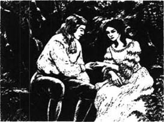
“哦，里德先生！”她说着，一脸绯红，“我本以为你很老实单纯，永远也不会做出这样的事来！毫无疑问，你抓鱼很在行。但是，约翰，你还没抓住我，没完全抓牢我。虽然我很喜欢你——但只要你跟危险保持距离，我就会更喜欢你。”
她的眼中含着泪水，看来她多少想像我爱她那样爱我，她吻了吻我的额头。接着，她温柔地将我送的戒指从手指上取下，吻了三次，还给了我。“约翰，我现在还不能接受它，”她说，“这样是不对的。我会试着更爱你——像你所希望的那样深爱你。在此之前，请替我保管这枚戒指。直觉告诉我我会赢得它——很快。”
这一次，我答应洛娜两个月内不去找她。一旦卡弗或亲王用暴力对待她，她会像以前那样给我发信号。两个月的等待是漫长的，但由于她所说的那番话，我仍然满心欢喜。
此后不久，我将洛娜的事告诉了妹妹安妮。我知道她会替我保守秘密，而且能跟她倾诉我的烦恼也是件好事。接着，她让我大吃一惊：汤姆·费格斯向她求婚了，而她也已经答应了。但是，虽然母亲很喜欢汤姆，可我们俩都知道她是不会愿意把女儿嫁给他的！而对于我想娶洛娜·杜恩的事，母亲又会有什么反应呢？我们约定将尽可能帮助对方。
* * *
在约定的两个月后的第一天，我去找洛娜了。但这次，当我来到瀑布顶端时，她却不在那儿。
我等了好几个小时，她仍然没有来。接着，我所见的一幕让我替她担心起来。我躲藏在一棵大树后时，一名身材高大的男子出现在眼前，迈着慵懒的步伐走进了山谷。他头戴一顶阔边帽，身穿一件深色上衣，脚蹬高帮靴，肩上还扛着一支枪。等他走近时，我能清楚地看见他的脸。他的脸上有某种东西让我惧怕得浑身发凉。那是一张永远没有笑容的脸——眼里只有冷酷。我毫不怀疑地断定此人就是卡弗·杜恩。
他就是那个打算娶洛娜的人，我愤愤地想着。他不知道我在那儿，但我却几乎有点希望他能发现我。如果我们能赤手空拳地较量一番，那将是一场公平的较量，因为他是我所认识的人中唯一跟我身形相当的一个。但我知道，跟卡弗较量将是个错误的举动。无论我是赢是输，杜恩家族都会知道我的存在，而我将永远无法再见到洛娜。
直到晚上，洛娜还是没有出现，我便回家了。此后的两周内，我每天都回到山谷中，却从没见到过洛娜。但我又一次见到了卡弗·杜恩，他扛着枪在山顶来回走动，这让我很担心。我敢肯定洛娜身处险境，我得去杜恩山谷找她。
这一次，我决定从杜恩大门进去。这条路线很危险，但我知道，这样能了解杜恩家族在山谷主要人口处的设防，对以后很有用。
夜色笼罩下的杜恩大门，周围是高高的黑色悬崖和尖利的岩石，是个让人胆战心惊的地方。外面没有卫兵，我小心翼翼地悄然走上了悬崖之间狭窄而昏暗的小路。很快，我就看见悬崖的一角有一道灯光射出来。我紧贴着岩壁，蹑手蹑脚地走到那个角落，四下打量了一番。
两名卫兵正坐在灯下，枪就放在身边的地上。悬崖延伸到这里，变成了坑洼不平的岩石路面，乱石交错，投下深深的黑影。卫兵们显然没预料到会有人来袭击，正喝酒聊天呢。我站在那里观望。正当我思量着该怎么办时，他俩开始争执，继而打斗起来。这就给了我机会。我沿着岩壁慢慢走过去，接着飞快地走到那片开阔的岩石路面上的黑影中。卫兵们正忙着打斗，丝毫没有察觉到我。我很快经过他们身边，沿着山坡走进了杜恩山谷。
洛娜曾经告诉过我，走进杜恩大门后的第一座房子就是她祖父的。于是，我轻手轻脚地走过去，站在其中一扇窗户下面。我不能大喊大叫，因为这座小山村里还有其他的卫兵守护。但那天晚上，我的运气很好。洛娜正好来到窗前将窗户打开，抬头望向夜空。我轻声呼唤着她的名字。她吓了一跳，接着向下看了看，才看清了我是谁。
“约翰！”她说，“哦，约翰，你一定是疯了！”
“我的确就快要疯了，因为我不知道你究竟出了什么事。但你知道，我一定会来的。”
“我的确在盼望你的到来！但你看到他们在我的窗户上安装了木条吗？”她把手从木条间伸出来，我握住那只手吻了吻，然后将她的双手握在我掌心里。
“哦，约翰，你快要把我给弄哭了。”她说道，虽然我看见她早就开始哭了。“我们永远也不可能在一起。我为什么要让你不开心呢？试着忘掉我吧。”
“永远不会的，”我说，“如果我们希望属于彼此，洛娜，那就没有人能阻止我们——除了上帝，如果他希望那样的话。好了，告诉我，你为什么被关在这儿了？”
“我祖父现在已经病入膏肓，我担心他撑不了多久了。亲王和他的儿子已经成了山谷的主人。他们想让我呆在他们的视线范围内，这样我就无法从卡弗身边逃脱了；而格温妮现在也被禁止到处走动了，所以我没法捎信或是留信号给你。如果你想救我的话，约翰，你就必须日夜监视这座房子。他们将会不择手段，一旦我可怜的祖父——哦，我不能光想着自己，我应该为他着想。”
“我还怎么能让你在这儿多留一个晚上呢，洛娜？”我说。
“你必须这样，约翰，”她说，“你很勇敢，但我太爱你了，不能让你在这儿多作停留。是的，这是真心话！但是我不能在祖父奄奄一息的时候离开他。所以，如果你爱我的话，约翰，你就必须离开这里。”
“我现在暂时离开。不过等我一听说你祖父去世的消息后，就会来带你离开这里。要是我保证能让你安全地离开，你会不会跟我走？”
“会，”她说，“我当然会。”
于是，我再次把她的一只手握在手中，把我的戒指戴到她手指上。从我第一次把戒指带给她的那天起，我就一直把它放在衣兜里。尽管她边哭边紧抓着我的手，但这一次，她留下了戒指。
“哦，约翰，这个梦永远也无法实现，永远也无法实现！”她说。
7．Lorna leaves the valley
7
Lorna leaves the valley
I left Doone valley by my own secret route and went home to make plans for bringing Lorna to the farm. It was time to tell Mother all about Lorna and the danger she was in.
At first Mother was very angry and unhappy at my news. She talked wildly about going away and leaving the farm, but after a time she began to calm down.
'When you see her, Mother,' I said, 'I'm sure you will love her like a daughter. And I know she will love you with all her heart — she is so good and gentle.'
Mother was too kind-hearted to be angry for long. She cried a little more, then smiled and said, 'Well, God knows what is good for us. You must bring her here, John, and I will teach her how to be a farmer's wife.'
Lorna and I had agreed a new signal. There was a tall tree near her grandfather's house, which I could see from the cliff top above the valley. In the top branches of the tree there were seven large birds' nests from the last summer. Gwenny could climb like a cat, and if one morning saw only six nests, then Lorna's grandfather was dead and she was in great danger.
It was a bad winter that year. We had more snow than anyone could remember, and on Exmoor the snow was soon so deep that no one could walk on it safely. I had to find a way to cross this, but I had an idea. Lizzie had once shown me a book about the icy countries of the far north, where people wore 'snow shoes'. The book had pictures of these wide, flat shoes which stopped travellers' feet going down through the snow. For the first time I thanked my sister in my heart for reading so many books! I found some wood and animal skins, and soon I had made some snow shoes, like the ones in Lizzie's book.
We had a sled on the farm, which we used when the ground was covered in ice. A horse could not pull it in this weather — but, with my snow shoes, I could! I could use it to carry Lorna and her servant.
Some days later I saw only six birds' nests in the tree, and that evening I tied myself to the sled, and left for Doone valley. I took the sled to the waterfall, which was now a fall of ice, and tied it up there. Then I continued on foot, going around the south side of the valley towards the Doone-gate. But when I looked down, I saw there was a quicker way to reach Lorna. The sides of the valley, like everything else, were covered in deep snow, and here the snow was smooth and icy. I looked around to check that there were no Doones in sight, then sat down on the icy snow and pushed myself off. In seconds I had slid all the way down the mountainside, and landed in a hill of soft snow at the bottom.
At Sir Ensor's house, I whispered Lorna's name below the window, as before. This time, Gwenny let me in, when she was sure who I was. But inside I saw a terrible sight. Gwenny looked almost mad with hunger, and Lorna lay back on a chair, as white as the valley all around us.
'Good God!' I said, and ran to her. I took her in my arms but she was so weak that she could not speak at first.
'We've been kept in here for days without food,' said Gwenny. 'And they were going to keep us here until Lorna agreed to marry Carver.'
'We must leave at once,' I said. 'Will you come with me, Lorna? I promise to take you safely through the snow.'
Lorna gave me her lovely smile. 'Of course I will, dear,' she whispered. 'Of course I will.'
'And you too, of course, Gwenny,' I said. 'Be quick now, and help me to get your mistress ready.'
From outside, I had heard the sounds of singing. There were usually guards around the house, Gwenny told me, but tonight the Doones were drinking and dancing to welcome Carver as their new leader. This would give us our chance — with all this happening, the robbers would never notice us leaving.
We were soon ready. I picked up my beautiful Lorna and carried her through the snow and the darkness to the other end of the valley. Gwenny was able to follow us, putting her feet in the places where my snow shoes had been. I made Lorna comfortable in the sled, with her little servant beside her, and I told her to hold on to Lorna tightly. The waterfall was now a path of ice — very steep and dangerous, but I was able to take the sled down it, using my stick, and all my strength, to stop it going too fast on the ice.
When we were down the waterfall, I tied myself to the sled and began to pull. It was hard work for me — but the best work I had ever done in my life! There was no time to lose, with Lorna so weak from hunger and cold, so I pulled fast, and an hour later we were home.
My mother and sisters came to the door, and helped me to carry Lorna in. We put her in a chair by the fire, and gave her some soup. Then she slept, while I watched over her. After a time, she began to wake up. She put her trembling hands into mine, and looked at me with so much love in her eyes that I could not find the words to speak to her. We sat like this for several minutes, and then we heard a little sound behind us.
It was Mother, crying with happiness to see us so loving. At this, Lorna got up and went to her. She knelt beside Mother's chair and looked up into her face. Mother put her hand on Lorna's hair. 'My sweet child,' she said softly.
A few days later, when Lorna and I were sitting together by the fire, she said to me:
'John, you gave me a beautiful ring, and now I want to give you something. It is only a very poor, old thing, but it's all I have. My grandfather gave it to me before he died. I hope you will take it.'
Then she put on my finger the strangest ring I had ever seen. It was very old, and there was a picture on it. It was hard to see what the picture was, but it looked almost like a cat in a tree.
'I shall wear it, my love,' I said, 'until the day I die.'
nest n. a place made or chosen by a bird for laying eggs and sheltering its young 鸟巢
sled n. a vehicle for traveling over snow or ice 雪橇
in sight visible 看得见
洛娜逃离山谷
7．洛娜逃离山谷
我沿着自己的秘密路线离开了杜恩山谷，回家准备制定计划将洛娜带到农庄来。是时候告诉母亲有关洛娜的事和洛娜目前所处的险境了。
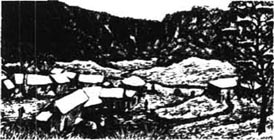
一开始，母亲对于我带来的消息非常生气，闷闷不乐。她激动地说着要走、要离开农庄的话，但过了一阵子，她开始冷静下来。
“等您看见她的时候，母亲，”我说，“我敢肯定您会像爱自己女儿一样爱她的。而我也知道，她会全心全意地爱您——她为人很好，很温柔。”
母亲是个非常心软的人，没有生太久的气。她又哭了一小会儿，然后破涕为笑道：“嗯，天知道对我们而言，何所谓福。你得把她带到这儿来，约翰，我会教她如何做一名农夫的妻子的。”
洛娜和我约定了一个新信号。她祖父的房子旁边有一棵高大的树，我能从山谷上面的悬崖顶上望见它。树冠顶端的树枝上有七只去年夏天留下来的大鸟巢。格温妮能像猫一样爬上树去。要是哪天早上我只看见六只鸟巢，那么洛娜的祖父就已经过世了，而洛娜则处于极度危险的境地。
那年冬天的天气很糟糕。在所有人的记忆中，没有哪年下过比这年更多的雪。在埃克斯莫尔，积雪很快就厚得让人无法安全行走了。我必须想办法解决这个问题，还好我已经有主意了。莉齐曾给我看过一本书，书上写的是在遥远的北方的冰雪国度，那里的人穿的是“雪地靴”。书上有这种又宽又平、能防止行人的脚陷进雪地里的鞋子的图片。我第一次打心眼里感激自己的妹妹博览群书！我找了些木头和兽皮，很快就做了几只雪地靴，就像莉齐的书里画的那样。
我家农庄上有一架雪橇，供我们在地面结冰的时候使用。在这样的天气里，马是没法拉雪橇的——但穿上雪地靴以后，我就拉得动了！我可以用这架雪橇来拉洛娜和她的仆人。
过了一些日子，我看见树上只剩下六只鸟巢了。那晚，我将雪橇绑在身上，动身前往杜恩山谷。我把雪橇拉到已经结成冰帘的瀑布前，将它拴在那里，然后继续徒步绕过山谷南侧，朝杜恩大门走去。但当我向下望去时，看见了一条到达洛娜那里的捷径。山谷的两侧同别的地方一样，也覆盖着厚厚的一层雪，而且这里的雪面上还结了一层光洁的冰。我四下张望，确定周围没有杜恩家族的人，便坐在冰雪上溜了下去。几秒钟后，我便一路滑下了山，落在山脚柔软的雪堆里。
我像以前那样，在思索尔爵士屋外的窗下轻声呼唤洛娜的名字。这一次，格温妮在确定我是谁后，让我进了屋。但在屋里，我看到了一幕可怕的景象。格温妮已经快饿疯了，洛娜躺在椅子上，脸色苍白得像周围的山谷。
“我的天哪！”我说着，朝她飞奔过去，将她揽在怀中。但她一开始竟虚弱地说不出话来。
“我们已经被关在这儿饿了好多天了，”格温妮说，“他们还会继续将我们关押在这儿，直到洛娜同意嫁给卡弗为止。”
“我们必须马上离开这里，”我说，“你会跟我走吗，洛娜？我保证能带你安全地穿过雪地。”
洛娜给了我一个可爱的微笑。“我当然会跟你走了，亲爱的，”她低声说道，“我当然会了。”
“当然还有你，格温妮，”我说，“好了，快点，帮我给你的女主人做好准备。”
此时，我听到窗外传来阵阵歌声。格温妮告诉我说，屋子周围通常都有卫兵看守，但今晚，杜恩家族的人都在喝酒、跳舞，庆贺卡弗成为他们的新头目。这将为我们制造机会——周围这一切将使得这帮强盗不会留意到我们的逃离。
我们很快就准备好了。我抱起我美丽的洛娜，带着她穿过黑暗的雪地，来到山谷另一端。格温妮踏着我的雪地靴留下的脚印，跟在我们身后。我将洛娜舒舒服服地安置在雪橇里，让她的小仆人躺在洛娜身边，告诉她要紧紧抓住洛娜。瀑布如今成了一条冰道——陡峭而危险，但我仍能利用木棍推着雪橇，用尽全身力气防止雪橇在冰面上滑得过快。
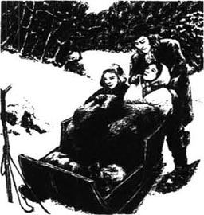
下了瀑布，我将雪橇绑在身上开始拉雪橇。这对于我而言是个苦力活——但也是我这辈子干过的最棒的活！不能再耽误时间了，饥寒交迫的洛娜已经很虚弱了。于是我飞快地拉着雪橇，一个小时后，我们到家了。
母亲和妹妹们来到门口，帮我将洛娜抱进屋。我们将她放在壁炉边的椅子上，给她喝了些汤。接着，她睡着了，而我则在一旁看着她。过了一阵子，她渐渐醒了过来。她将颤抖的双手放进我手中，双眸充满爱意地望着我，我不知该对她说些什么才好。我们就这样坐了几分钟，接着听见身后传来细微的响动。
那是母亲，她见到我们如此恩爱，高兴得哭了起来。见此情形，洛娜站起身朝她走了过去。她跪在母亲的椅子旁，抬头望着她的脸。母亲将手放在洛娜的头发上。“我亲爱的孩子，”母亲柔声说道。
几天后，当我和洛娜一起坐在壁炉边时，她对我说：
“约翰，你给了我一枚漂亮的戒指，现在我想送给你一样东西。这只是一件很不值钱的旧物，但却是我所拥有的一切。祖父在临死前把它给了我，我希望你能收下。”
接着，她将一枚我所见过的最奇怪的戒指戴到我的手指上。戒指已经有些年头了，上面有一幅画。很难看清那上面画的是什么，但看起来似乎是一只趴在树上的猫。
“我会戴着它的，我的爱人，”我说道，“直到我死的那一天。”
8．The attack
8
The attack
Soon everybody in our part of Exmoor knew that Lorna Doone was at Plover's Barrows farm. So I knew the Doones would come looking for Lorna as soon as they could. But, for now, the weather saved us. They could not move in the snow, and when the rains came in spring, they had even bigger problems. The rains were heavy, and when the snow also turned to water, the rivers became very high. In Doone valley the robbers' homes were almost under water. They needed most of their men to take care of their village. If they attacked us, we knew it could not be with as many men as they would like.
Spring also brought a visitor for Annie. The snows had kept Tom Faggus away from the farm all winter, but now he came to see her, and he had something to tell her.
'Before the snows came,' he said, 'I went to London. And I have something to show for it.' Then out of his pocket, he took a letter. It looked very important, and had the King's sign on it. 'What do you think it is?'
We all looked at it, but it was full of long lawyers' words and no one could understand what it meant.
'I'll tell you what it means,' laughed Tom. 'It means that I am not a criminal any more. This letter says that the King is ready to forget all my years as a robber, and I am a free man.'
We all wondered how this could be, but then Tom explained. 'I spoke to Judge Jeffreys. He knows me. He said, "If you promise never to rob again, you can go free. There's enough for the King to worry about in this country already, with all his enemies. So if we can forget about you, that's good enough for us."'
Everyone felt proud of Tom. We thought it had been very brave of him to go to Judge Jeffreys. But now he had something even better to tell us. With the money he still had, Tom had bought some land. He was going to live an honest life, and be a farmer again.
So we were not surprised when Tom asked Mother if he could marry Annie. Mother was not very sure of the new 'farmer Faggus'. She was afraid that he would get bored with farming and go back to being a robber. But she could see that he loved Annie very much, and between us, Annie and I managed to persuade her.
* * *
Now we began to prepare for the Doones' attack. Though the rivers were still high, people had begun to see a few of the robbers out on the roads, and we knew it would not be long before we would have to fight them.
As we were preparing, we received another visitor: my old friend Jeremy Stickles. This time, though, he had not been sent to find me. To our surprise, he told us that he had been spying in Exmoor for many months. He had been sent down this way again by Judge Jeffreys and the King.
'You must not tell anyone what I'm doing,' he said. 'But I have been sent to do important work. The King has many enemies, and now I have been given some soldiers — though only a few — to help me look for them. But I have to ask you: can my soldiers and I stay here for a while?'
I agreed immediately. When the Doones attacked, it would be a great help to have soldiers staying in the house. I told Jeremy all about Lorna, and he promised to help defend our farmhouse against any Doone attack.
The next day Stickles came with his men. There were only six of them, but even to have these was a help. All we could do now was wait, and be ready each night for an attack.
One day I came home late from the fields, and found all the women trembling with fear. Lorna had seen Carver Doone !
She had gone out in the evening to look at some flowers by our stream. There were thick bushes on the other side, and when Lorna looked up, she saw two cruel black eyes staring at her. She was too frightened to move. Carver could not cross the stream because the water was too high, but he lifted his gun and fired at the ground by Lorna's feet.
'Unless you come back tomorrow,' he said, 'and tell me how to destroy that farmer, Ridd, who will soon be a dead man because of you, this will be the place of your death.'
Lorna told us this, trembling. We knew that Carver would not wait until tomorrow, and we got ready for an attack that night.
When the Doones attacked a farm, they always started fires in the hay ricks first — to frighten everyone and show what they could do. So when darkness came, I went with my best gun and a heavy stick to one of the hay ricks, and waited beside it.
I had made sure that Lorna stayed in the house, but little Gwenny climbed a tree near the river. From there she could see up the river to the only place where it was possible to cross. Soon the moon came up, and before very long, Gwenny came running towards me.
'Ten of them, coming across the river,' she said. 'They'll be here in a minute.'
'Go into the house and tell Mr Stickles and his men. I'll stay here and watch,' I said.
The robbers broke down our gate, and rode towards the house. I could see the soldiers hiding in the shadows, waiting for the order to fire, but the Doones then turned towards the hay ricks.
'Kill every man and every child, and burn the farm,' came the deep voice of Carver Doone. 'Start over there.' He was pointing to the hay rick where I was, though he could not see me. 'But remember, Lorna is mine, and I will kill any man who touches her.'
As Carver spoke, I pointed my gun at him, but — will you believe me? — I didn't shoot. I had never killed a man, nor even badly hurt one. I did not think it was an easy thing to do. Now, I can say that I wish I had killed him. But I put my gun down, and picked up my stick — a more honest weapon than a gun, I thought.
Two young Doones came towards me, with burning sticks. The first put his stick to the hay rick I was standing near, and it started to burn. I hit him on the arm, and heard his bone break as he fell over with a shout of pain. The other man ran to see what had happened, and I took his fire stick and broke it. Then he jumped at me, but I caught him, broke his arm, and threw him on top of his friend.
I could still see Carver and wanted to jump at him — but I knew he would simply shoot me. While I was thinking about it, there came a loud noise and six tongues of flame from near the farmhouse. Stickles had ordered his men to fire at the Doones as they came towards the house. Two fell and the others ran back. They had something to think about now; no one had ever fought the Doones as we were doing that night.
Now my moment had come. I came out from my place near the burning rick. I knew Carver Doone by his size even in the shadowy moonlight, and I took hold of him by the beard. 'Do you call yourself a man?' I said.
For a second he was too surprised to do anything. No one had ever looked at him the way I did now. He lifted his gun, but I was too quick for him and knocked it out of his hand.
'Now, Carver Doone, take warning,' I said. 'You think you are so much better than everyone else, but you are no more than an evil robber. Lie low in the dirt from which you came.'
Then I kicked his feet from under him and knocked him down. When they saw that he was down, the other Doones ran, but Carver simply got up and walked away, shouting at me and everyone.
We wondered whether to chase the Doones, but Mr Stickles said it would be too dangerous on the moor in the dark. One thing was certain: the robbers had known defeat that night on our farm — something they had never experienced since the day they came to Exmoor. And they went home without four of their men. Two were dead, shot by the soldiers, and the other two were the men whose arms I had broken by the hay ricks. We buried the dead men in the fields, and Jeremy Stickles sent the two wounded men to the prison in Taunton.
between us in confidence 私底下
unless conj. except when; if not 除非
hay n. grass that has been cut and dried 干草
rick n. a large pile of straw or grass that is kept in a field until it is needed 干草堆；草垛
make sure confirm or ensure 设法确保
weapon n. a thing designed or used for inflicting bodily harm or physical damage 武器
moor n. 沼泽地
农庄遭袭
8．农庄遭袭
很快，我家附近的埃克斯莫尔人全都知道了洛娜·杜恩住在普罗沃斯巴若斯农庄。因此，我知道杜恩家族的人很快就会来寻找洛娜的。不过眼下恶劣的天气暂时救了我们。他们在雪地里无法行动，而当春雨降临时，他们的麻烦就更大了。雨下得很大，再加上冰雪融化，河水迅速上涨。杜恩山谷里的强盗老巢几乎被水淹没了。他们中的大部分人手都得留守村庄。我们知道，如果他们想袭击我们，他们是来不了多少人的。
春天还为安妮带来了一位客人。大雪使得汤姆·费格斯整个冬天无法前来农庄，不过现在他来看望她了，并且还有些事要告诉她。
“在下雪之前，”他说，“我去过伦敦。我有东西要给你们看。”接着，他从衣兜中掏出一封信。那封信看起来很重要，上面有国王的印鉴。“你们觉得这是什么？”
我们看了看，但里面全是律师们惯用的冗长的句子，没人能理解那是什么意思。
“我来告诉你们这封信意味着什么吧，”汤姆笑着说：“它意味着我不再是一名罪犯了。信上说，国王准备宽恕我多年来的强盗生涯，我现在是一名自由人了。”
我们都想知道这是怎么回事，汤姆接着解释道：“我跟杰弗里斯法官谈过了。他认识我。他说：‘如果你发誓不再抢劫，就可以得到自由。国内的敌人已经够让国王操心的了，所以如果你能不让我们操心，那对我们而言就够好了。’”
大家都为汤姆感到骄傲。我们都觉得他很勇敢，有胆量去见杰弗里斯法官。而现在，他还有更好的消息要告诉我们：他用自己剩下的钱买了一些地，要开始过正正当当的生活，重新做一名农夫。
因此，当汤姆问母亲他是否能娶安妮为妻时，我们毫不惊奇。母亲对新的“农夫费格斯”仍有所怀疑，担心他会厌倦农活、重操旧业。但她看得出他很爱安妮，而我和安妮在私底下说服了她。
* * *
现在，我们开始为应付杜恩家族的袭击做准备了。虽然河水水位仍然很高，但人们已经开始在路上看到零星的强盗出没了。我们也知道，过不了多久就得跟他们决战了。
正当我们做准备的时候，又迎来了另一位访客：我的老朋友杰里米·斯蒂克尔斯。但这一次，他不是奉命来找我的。令我们惊讶的是，他说自己已经在埃克斯莫尔秘密侦察了好几个月。是杰弗里斯法官和国王再次派他来的。
“你们千万不要将我正在做的事告诉任何人，”他说。“我奉命前来是有重要的工作要干。国王的敌人众多，而现在我手下配备了一些士兵——虽然只有为数很少的几个——来协助我寻找国王的敌人。但我得问问你：我和我的士兵们能在这儿呆一阵子吗？”
我立刻答应了。等到杜恩家族发动袭击的时候，有士兵呆在我家将会起到很大的作用。我将洛娜的事全都告诉了杰里米，他答应帮忙保卫农庄，抵抗杜恩家族的任何袭击。
第二天，斯蒂克尔斯带着他的手下来到了我家。他们只有六个人，但就算这样也非常管用。我们现在所能做的就只有等待，每晚都做好抵抗袭击的准备。
有一天，我在地里干活，回家稍晚了点儿，到家后发现所有女人都吓得发抖。洛娜看见了卡弗·杜恩！
那天傍晚洛娜出门到小溪边看花。溪流对岸是茂密的灌木丛，她抬头看去，发现一双残酷的黑眼睛正瞪着她。她吓得一动也不敢动。由于水位过高，卡弗没法穿过小溪，但他举起枪，朝洛娜脚边的地上开了一枪。
“除非你明天就回来，”他说，“并且告诉我如何干掉里德——就是那个很快就要因你而送命的农夫，否则这里就将是你的葬身之地。”
洛娜颤抖着将这一切告诉了我们。我们知道卡弗不会等到明天，于是准备好当晚迎敌。
杜恩家族的人在袭击农庄时，通常会先在于草堆里放火——为的是惊吓众人并展示自己的本事。于是，当夜幕降临时，我带着自己最好的枪和一根粗重的棍子来到一个干草堆旁等候。
我已事先让洛娜呆在屋里了，而小格温妮则爬上了河边的一棵树。在那儿，她能看见河流上游唯一可以渡河的地方。月亮很快升了起来，没过多久，格温妮便朝我跑了过来。
“他们有十个人，正在渡河，”她说，“很快就会到这儿了。”
“到屋里去告诉斯蒂克尔斯先生和他的手下。我留在这儿放哨，”我说。
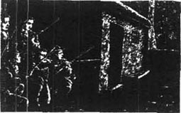
强盗们砸烂了我们的大门，骑着马朝房子冲过来。我能看见士兵们躲藏在阴影中，等待着开火的命令。而杜恩家族的人随后转向了干草堆。
“杀掉所有男人和小孩，烧掉农庄，”卡弗·杜恩阴沉的声音传了过来，“从那边开始。”他指着我所在的干草堆，不过他看不见我。“但你们要记住，洛娜是我的，谁敢碰她我就杀了谁。”
就在卡弗说话的时候，我用枪瞄准了他，但是——你信不信？——我没有开枪。我从没杀过人，甚至都没有重伤过别人。我觉得那可不是一件容易的事。而现在，可以说我真希望自己当时杀了他。但当时我放下了枪，拾起木棍——我觉得这是一件比枪支要实在得多的武器。
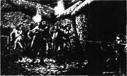
两名年轻的杜恩家族的人举着火把朝我这边冲过来。前面那人将火把伸向我身边的干草堆，草堆燃烧了起来。我击中了他的胳膊，听见他骨头断裂的声音，而他则痛得大叫一声跌倒在地。另一人跑过来看发生了什么事，我夺过他的火把，折成两段。接着，他朝我扑过来，但我抓住了他，扭断了他的胳膊，将他扔到他的同伙身上。
我仍能看见卡弗，并想朝他扑过去——但我知道他自然会朝我开枪。我刚想到这儿，便传来一声巨响，只见农庄的屋子附近喷出六道火舌。当杜恩家族的人朝屋子冲过去时，斯蒂克尔斯命令自己的手下朝对方开枪了。两名杜恩家族的人栽倒在地，其余的人则扭头狂奔。他们总算尝到滋味了；没有人像我们当晚那样痛击过杜恩家族。
现在，轮到我出马了。我从燃烧的干草堆附近的藏身处走了出来。就算是在昏暗的月光下，我也能根据身形辨认出卡弗·杜恩。我揪住了他的胡子。“你能称自己是个男子汉吗？”我问。
一时间，他惊讶得不知所措。以前从来没有人像我这样盯着他。他举起自己的枪，但我还没等他有所动作，便抢先将枪从他手中击落了。
“卡弗·杜恩，现在我警告你，”我道，“你自以为比所有人都强，但你只不过是一个邪恶的强盗。还是滚回你那肮脏的老巢去吧。”
接着，我从下面踢中了他的双脚，将他放倒在地。杜恩家族的其他人看见他栽倒后便落荒而逃了，但卡弗站起身，冲着我们大吼大叫着离开了。
我们思量着是否追击杜恩家族的人，但斯蒂克尔斯先生说，夜晚过沼泽地太危险了。有一件事是肯定的：那天晚上，这帮强盗在我们的农庄上领教了失败的滋味——这是他们自从到埃克斯莫尔以来从未经历过的事。而且他们当中有四个人没能回去，其中两人被士兵们击毙，另两个家伙则在干草堆边被我折断了手臂。我们将死者埋葬在田野里，杰里米·斯蒂克尔斯将两名伤者送进了道恩顿监狱。
9．Lorna's true story
9
Lorna's true story
The Doones' attack had been defeated. We knew that they would come again, as soon as they could, in larger numbers. But for now, Jeremy Stickles gave me something else to think about. My dearest wish was to marry Lorna as soon as I could, but after Jeremy's story I began to wonder if it would ever be possible.
A few days after our battle with the Doones, Jeremy said he had something to say to me.
'John, I didn't think the time was right to tell you this before. But now you must hear what I have to say. As you know, I've been riding around Exmoor for many months, looking for information that might be useful to the King. I remembered all that you told me about Lorna, and I think I have discovered something about her. It may not be easy for you to hear, John. Are you ready?'
'I will do my best,' I said.
So he began his story.
'Six or seven months ago, before the snows began, I stopped at an inn on my way from Dulverton to Watchet. The inn was all by itself, right by the sea, and was very quiet. I was the only person staying there, and the woman who owned the inn sat down and talked to me during my meal. She was dark and foreign-looking, and intelligent. I was very interested to know how an unusual woman like her had come to live in this lonely inn, and she told me her story.'
'She said that she was from Italy, and her name was Benita. Many years ago, while she was working in Rome, she had met an English family. They were travelling in Italy because they'd had a terrible argument in England with another family. Benita did not know much about the argument, except that it had been about land.'
'Benita liked this English family. They were very rich, but they were also kind. So when they asked her to travel with them and take care of their children, she agreed. She loved the children — a little girl and boy — so she was very happy in her work.'
'At first everything went well. Together, Benita and the family travelled up through northern Italy and into France. But on the French side of the Pyrenees, the husband of the family had a riding accident and was killed.'
'His wife was deeply unhappy, and would not move from the place where he had died for many months. But finally she decided to go home to England and try to start life again. Benita stayed with her, and they took a ship to the Devon coast. They stayed at Exeter, and then left in a coach for Watchet, in the north of Somerset. The lady had a house there, where she planned to live.'
'They were warned, at Dulverton, about robbers on the roads, but the lady would not listen. She even travelled at night, which, as we know, is a very dangerous thing to do. So of course they were attacked by robbers. It happened near the sea. The coachmen drove onto the sand, and the robbers followed on their horses. The coach's wheels began to go down in the soft sand, and as the robbers came nearer, the lady pointed to one of them and said: "I know that man! He is our family's old enemy."'
'Then a great wave crashed against the coach and turned it over. Benita hit her head on the door and could not remember what happened. The next thing she knew was that she was lying on the sand and the robbers had gone. She looked around for her mistress and saw her sitting on a rock, with her dead son in her arms. The little girl had disappeared. Benita and the two coachmen took the lady into the town, but later that night, she died. This is a sad story!' said Jeremy. 'Give me a drink, boy!'
I saw that there were tears in the brave man's eyes.
'What was the lady's name?' I asked. 'And what happened to the little girl? And why did Benita stay there?'
'I will answer the last question first,' said Jeremy. 'That's the easiest. Benita stayed in that place because the Doones — if that's who they were — stole everything from the coach, and she had no money. She could not go back to Italy. She married a man who lived near the place because he was kind and could give her a home.'
'But the little girl, Jeremy. What happened to her?'
'John — can't you see it? You are more likely to know than anyone in the world! As certain as I sit here, that little girl is Lorna Doone !'
The truth was, I had guessed this, almost from the beginning of Jeremy's story. But it was almost too painful to believe, and I wanted Jeremy to say it. When he described the coach leaving Dulverton, the picture was very clear to me — because I remembered that coach, with the foreign-looking woman, the beautiful lady, the little boy, and the young dark-haired girl. I had seen them — on the day John Fry came to collect me from school, on the day I learnt my father had died.
I also remembered the frightening sight I saw later that night: of the Doones riding with the things they had stolen, and the one with a little girl across his horse in front of him. I also remembered my anger. Now I saw how the very same day had been the blackest and unhappiest of both my and Lorna's childhood days, and how from the very start, our lives had been joined together.
But there was still one question to answer. 'What was the family's name?' I said.
'The father was Lord Dugal — he came from a very grand family. But there is more to this. Look at your ring, John — the one that Lorna gave you. Look at that strange sign, of a cat in a tree. I saw that same sign above the inn door! That is the sign of the House of Lorne. It is the family that Lorna's mother came from. John, your Lorna belongs to one of the richest and most famous families in England!'
inn n. a public house, traditionally an establishment also providing food and lodging 小旅馆
accident n. an unfortunate incident that happens unexpectedly and unintentionally 意外
point v. direct someone's attention in a particular direction by extending one's finger 指着
house n. an important family 显赫的家族
洛娜的身世
9．洛娜的身世
杜恩家族的偷袭被粉碎了。我们知道他们还会纠集更多的人马，尽快卷土重来。但杰里米·斯蒂克尔斯让另一些事暂时占据了我的思绪。我最大的愿望就是能尽快娶洛娜为妻，但在听完杰里米给我讲的故事后，我开始怀疑这个愿望是否有实现的可能。
在我们同杜恩家族的战斗结束几天后，杰里米说他有事要跟我讲。
“约翰，此前我认为时机不到，不适合告诉你这件事。但现在，你必须听我说一些不得不说的事。如你所知，我已经骑马在埃克斯莫尔附近侦察了好几个月，找寻可能对国王有用的信息。你对我说过的关于洛娜的一切我都记得，而且我觉得自己还发现了一些跟她有关的事。知道这件事后你可能会很难受，约翰。你准备好了吗？”
“我尽量吧，”我说。
于是，他开始讲述他的故事。
“六七个月前，还没开始下雪，我在从达尔弗顿到沃切特的路上歇脚，住进了一家小旅馆。小旅馆就建在海边，孤零零的，非常静谧。我是唯一在那里住宿的人，小旅馆的老板娘就在我吃饭的时候坐下来跟我聊天。她肤色较深，像是个外国人，很聪明。对于像她这么一个不寻常的女子怎么会来到这里，住在这样一间孤零零的小旅馆里，我很感兴趣。于是她给我讲述了她的故事。”
“她说自己来自意大利，名叫贝妮塔。很多年前，当她还在罗马工作时，遇到了一家英国人。他们来意大利旅行是因为同英国的另一个家族发生了激烈的争执。贝妮塔对这场争执知之甚少，只知道同土地有关。”
“贝妮塔很喜欢这家英国人。他们非常富有，但也很和蔼。因此，当他们让她一路同行并照顾他们的小孩时，她同意了。她很喜欢那两个孩子——一个小女孩和一个小男孩——所以她工作得很开心。”
“一开始，一切都很顺利。贝妮塔和这家人穿过意大利北部来到了法国。但在法国边境的比利牛斯山脉，这一家的男主人在骑马时不慎意外身亡了。”
“他的妻子十分伤心，在此后数月内都不肯离开丈夫去世的地方。但最终她还是决定回英格兰老家，试着重新开始生活。贝妮塔陪伴在她身边，他们一起坐船来到了德文海岸。在埃克塞特稍作逗留后，他们坐马车前往位于萨摩塞特郡北部的沃切特。那位夫人在那里有一栋房子，她打算在此定居。”
“在达尔弗顿，有人警告他们要当心路上的强盗，但夫人非但不肯听，还在夜里赶路。我们都知道，这是非常危险的。结果不出所料，他们遭到了强盗的袭击。袭击发生在海边。马车夫将车赶上了沙滩，强盗们骑马尾随其后，马车的轮子逐渐陷入柔软的沙地。等到强盗们走近些时，夫人指着其中一人说：‘我认识那个人！他是我们家族的宿敌。’”
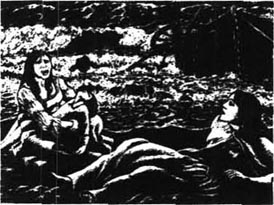
“接着，一个巨浪击向马车，把马车掀翻在地。贝妮塔的头撞在了车门上，记不得当时发生了什么事。等她苏醒过来时，发现自己正躺在沙滩上，强盗们全都走了。她四下张望着找寻自己的女主人，发现她正坐在一块岩石上，怀里抱着自己死去的儿子。小女孩消失不见了。贝妮塔和两名马车夫将夫人带到了小镇上，但她那天晚上过了没多久便去世了。真是个悲伤的故事！”杰里米说道，“给我一杯酒，小伙子！”
我看见这位勇敢的人眼中噙着泪水。
“这位夫人叫什么名字？”我问，“那个小女孩怎么样了？为什么贝妮塔要留在那儿？”
“我先回答最后一个问题吧，”杰里米说，“这个问题最简单。贝妮塔留在那儿是因为杜恩家族的人——如果当时那伙人真是杜恩家族的人的话——抢走了马车上所有的东西，而她身无分文，没法回意大利去。她嫁给了住在附近的一个男人，因为他为人和善，还能给她一个家。”
“但那个小女孩呢，杰里米？她怎么样了？”
“约翰——你难道不明白吗？你是这世上最有可能知道的人！就像我现在确确实实坐在你面前一样，那个小女孩就是洛娜·杜恩！”
事实上，我几乎在杰里米的故事一开头就已经猜到了。但这故事痛苦得让人难以置信，我希望杰里米能亲口告诉我。当他描述马车离开达尔弗顿时，这画面对我而言再清晰不过了——因为我记得那辆马车，还有车上坐着的外国女子、美貌的夫人、小男孩和那个黑发小姑娘。我见过他们——就在约翰·弗莱伊到学校来接我的那天，也就是我得知父亲死讯的那天。
我还记得那晚迟些时候所见到的可怕的一幕：杜恩家族的人骑马带着他们抢劫来的东西，其中一人的马背上还横放着一个小姑娘。我还记起了自己当时的怒火。这下我明白了，那一天是我和洛娜童年时代最黑暗、最悲痛的日子，而打从一开始，我们的生命就已经联系在一起了。
但还有一个问题没有答案。“这个家族姓什么？”我问道。
“洛娜的父亲是杜加尔勋爵——他出身于一个非常高贵的家族。但事情远不止这么简单。看看你的戒指，约翰——洛娜给你的那枚戒指。看看那奇怪的标记，一只趴在树上的猫。我在小旅馆的门上也看见了同样的标记！那是洛恩家族的标记，洛娜的母亲就出身于这个家族。约翰，你的洛娜是英格兰最富有、最显赫的家族的一员！”
10．Gone
10
Gone
Now I had to tell Lorna. So, a day or two later, with an aching heart, I went to tell her what Jeremy had said. I'm afraid that some of my sadness was for me, because now, more than ever, it was certain: Lorna was far, far above me. How could she possibly marry a simple farmer now?
We sat in the garden, and she held my hand while she listened without a word to what I said. But by the look in her beautiful eyes, and by her trembling hand, I could tell how she was feeling. At the end, she turned away and cried for her poor parents. But she spoke not even one word of anger about what had happened to them.
Then, to my surprise, she turned to me and caught me in her arms and kissed me as she had never done before. 'John, I have you. You, and only you. And I want no one else. It does not matter how rich or important my family is.'
It was impossible to doubt those clear deep eyes, and bright trembling lips. But I was afraid of what the future would bring. To me, she was Lorna Doone, but to the world, she was Lady Lorna Dugal — young, beautiful, and rich. And if the world learnt about her, it would want to take her away from me.
* * *
Now the date of Tom and Annie's wedding was decided, and I went to Dulverton to buy a present for them. As I was riding, I had time to think more about what Jeremy had told me.
It was clear from his story that Lorna's mother's family, the Lornes, were the family with whom Sir Ensor Doone had argued about land, before he came to Exmoor. This explained why Lorna's mother had called him her 'old enemy', when she saw him that terrible night. And this must be why the Doones had carried Lorna away and kept her, and never told her who she really was. If they could marry her to a Doone before she learnt the truth, perhaps they hoped in this way to get the Lorne family's land. They would be rich and important again — and at the same time have revenge on the Lornes. But it would have to be a lawful marriage, so Sir Ensor had taken good care of Lorna and kept her safe from the wild Doone men. And Carver, seeing how beautiful Lorna had become, had decided to marry her himself.
In Dulverton I stayed with Uncle Ben, and his granddaughter, Ruth. She was a beautiful and intelligent girl, and had often been very kind to me.
I did not spend too much money on a present in Dulverton. I was saving for my own wedding to Lorna. I had told her that if her family's great riches ever came to her, I would not touch any of her money. In fact, we had both agreed that we would give nearly everything to the poor, and live simply.
Three days later, dreaming hopefully of the future, I walked into the kitchen at home — and saw immediately that something was wrong. Then Mother and Annie told me that Lorna had gone.
Two men had come from London. They were lawyers and had been sent by the King's judges to take Lorna away. The judges had heard that she was still alive, and they and her uncle had ordered her to come to London. Her uncle was Earl Brandir — the last living person in her family — and Lorna now had to live with him. She could not refuse. She was not yet twenty-one, so she had to do what this uncle and the judges said. Of course, she had begged the lawyers not to take her. But they said they had their orders, and they could not wait for her to say goodbye to me.
Upstairs, by my bed, Lorna had left me a letter. I ran up to read it. She said she loved me, and she said 'Goodbye', and the letter finished like this:
John, we have been through so many troubles and dangers, but there is no doubt that we belong together. You must believe me. Whatever happens, I am yours.
But I could not stop myself from thinking: 'It is over.'
* * *
Later, I wondered how the judges and Lorna's uncle had heard that Lorna was still alive. Perhaps Jeremy Stickles had mentioned her in his spying reports to the King and Judge Jeffreys. Perhaps the Doones themselves had sent the news to London — in order to get their revenge on me. The daughter of so famous a family would not be allowed to marry a simple farmer and live quietly in Devon. Jeremy was away on one of his spying trips now, so I could not ask him about it. But, anyway, there was nothing he could do.
The weeks and months passed, and life on the farm seemed lonely and empty. After Annie married Tom, and went to live with him, I felt even more alone. Sometimes I used to go over and see her in her new home, but it was not the same as having her by my side, the friend and companion from my childhood days.
aching adj. suffering from a continuous or prolonged dull pain 疼痛的
lady n. a title used by peeresses, female relatives of peers, the wives and widows of knights, etc. 女勋爵
learn about to gain knowledge or information 获悉
save v. save for future use 储存
洛娜离去
10．洛娜离去
现在，我得把事实真相告诉洛娜。于是，一两天以后，我怀着悲痛的心情跟她讲述了杰里米告诉我的故事。我想我的伤感有一部分是为了我自己，因为此时此刻，比以前更加确定无疑的是：洛娜的地位要远远高于我。现在她怎么可能嫁给一名普通的农夫呢？
我们坐在花园里，她握着我的手，一言不发地听我讲述。但从她美丽的双眼中透出的神情和她颤抖的双手，我能了解她的感受。听完故事，她扭过头为她可怜的父母痛哭起来。但对于他们所遭遇的不幸，她却连一句愤慨之词也没有。
接着，令我惊讶的是，她转向我，伸开双臂将我抱住亲吻起来。她以前从没这么做过。“约翰，我拥有你，就只有你。别的人我都不要。无论我的家族有多么富有、显赫，都没有关系。”
她那清澈深邃的双眼和红润颤抖的双唇勿庸置疑。但我仍担心将来可能会发生的事。对于我而言，她是洛娜·杜恩，但对于世人而言，她是洛娜·杜加尔女勋爵——年轻、貌美、富有。要是世人知道了她的情况，一定会想把她从我身边带走。
* * *
现在，汤姆和安妮的婚期已定，我前往达尔弗顿为他们买件礼物。骑马的时候，我有时间进一步想想杰里米所说的话了。
从他讲的故事中不难看出，洛娜的母亲属于洛恩家族，就是恩索尔·杜恩爵士在来到埃克斯莫尔之前曾与之发生过田产争执的家族。正因为如此，洛娜的母亲在当年那个可怕的夜晚看见他时，才会称他为“宿敌”。而一定也正因为此，杜恩家族的人才将洛娜抢走并抚养长大，但却从不告知她的真实身份。也许他们希望能在她获悉真相之前将她嫁给一名杜恩家族的人，借此夺得洛恩家族的田产。这样，他们又能重新富有和显赫起来——同时也向洛恩家族报了仇。但这场婚姻必须合法，因此恩索尔爵士精心照顾洛娜，使其免受野蛮的杜恩家族人的伤害。而卡弗见到洛娜出落得如此美丽，便决定要娶她为妻。
在达尔弗顿，我同本叔叔以及他的孙女露丝住在一起。她是个聪明漂亮的女孩，对我一直很好。
在达尔弗顿，我并没有花太多钱买礼物，我正在为自己和洛娜的婚礼存钱。我曾告诉过她，如果她家族的巨大财富有一天到了她手里，我也决不会碰她一分钱。事实上，我们俩一致同意会将拥有的绝大部分财物都捐给穷人，只过简单的生活。
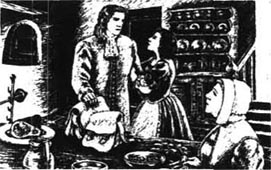
三天后，我带着对未来的憧憬，走进了家里的厨房——却立刻发现有些不对劲儿。接着，母亲和安妮告诉我，洛娜走了。
从伦敦来了两个人。他们是律师，奉国王的法官的派遣前来将洛娜带走。法官们听说洛娜尚在人间，就和她的舅公一起命令她前往伦敦。她舅公是布兰迪尔伯爵——她的家族中最后一位尚在人世的人——而洛娜现在必须同他生活在一起。她不能拒绝。她还未年满二十一岁，只能听从舅公和法官们的命令。当然，她当时也曾请求律师们不要带她走，但他们说自己也是奉命行事，而且不能等到她跟我告别。
洛娜在楼上我的床边给我留了一封信。我跑上楼读信，她在信中说她爱我，还说了“再见”。信的结尾这样写道：
约翰，我们一起经历了很多困难和危险，但毫无疑问，我们属于彼此。你必须相信我。无论发生什么事，我都是你的。
但我无法阻止自己这样想：“一切都结束了。”
* * *
后来，我寻思法官和洛娜的舅公是怎么知道洛娜尚在人间的。也许杰里米·斯蒂克尔斯在自己的侦察报告里向国王和杰弗里斯法官提到了她；也许杜恩家族的人将消息散布到了伦敦——借此向我报复。像她这样的名门望族之女是不可能被允许嫁给一名普通农夫、安安静静地住在德文郡的。杰里米现在已经去执行他的侦察任务了，因此我无法向他求证。但无论如何，他也无能为力。
时光飞逝，农庄上的生活寂寞而空虚。自从安妮嫁给汤姆并搬去与他同住后，我越发感到孤独了。有时我会过去看望住在新家的她，尽管她从我幼年时代起便一直伴随我左右，是我的朋友和伙伴，但如今总归不太一样了。
11．Tom Faggus in danger
11
Tom Faggus in danger
We still lived in fear of another attack from the Doones, and now that the soldiers had gone we had no one to help us. The main reason for their first attack — Lorna — was gone, but I was sure that Carver now hated me with all his heart, and would destroy us all if he could.
However, Jeremy Stickles brought us some good news one day. The King had at last agreed that the robbers should be punished, and that Jeremy should do whatever was necessary to catch them. So perhaps the Doones were saving their strength, preparing for a much bigger fight than their argument with me.
Then something happened which made everyone afraid for the future. Suddenly, King Charles the Second died. There was terrible trouble in England, as everyone argued over who should be the new King, and soon fighting began.
I wondered if all this would bring any danger for Lorna. But the truth was, I knew very little about her now. She had not written to me since the day she had left, or even sent a message. I only knew what I had heard from travellers in the town. They said that young Lady Lorna Dugal was much talked about in London, as one of the most beautiful women in the city. I became more and more certain that she had forgotten all about John Ridd, among the brighter stars of London.
In June, the fighting became more serious. There was now a new King — James, the son of Charles the Second — but many people in Dorset and Somerset were against him, and had joined an army of rebels. There was no chance now that Jeremy Stickles and his soldiers would fight the Doones. King James needed all his men to fight the rebels. At first we were very worried. Surely the Doones would attack us now. But the Doones had seen a new hope for their future. They had joined the King's enemies, hoping to win back their old land in the fighting. So they had sent most of their men to join the rebels, and were too busy again to worry about the Ridds — at least for a while.
As for me, I had decided that this battle between the King and his enemies was not my fight. Most people in the towns and villages around Oare were on the King's side and we gave no help to his enemies, but sensible people stayed at home. Too many men would die in the fighting anyway, without our joining them.
However, I did get involved in the troubles, because one rainy day Annie came to see us, with some bad news. She ran into the kitchen, her face wet with tears.
'Oh, John!' she cried. 'You must help me!'
'Whatever is the matter, Annie dear?' I said.
'It's Tom,' Annie cried. 'He's gone to join the rebels, and you must, oh, you must go after him and bring him back.'
We had been afraid of this. Tom could not forget the excitement of his old life and had become bored with farming. Mother was very unhappy and did not want me to go, but I had to help my unhappy sister. And although I knew it would be dangerous, I was quite glad of the chance of adventure. Perhaps — who knows? — I would learn some news of Lorna on my travels.
So I promised to fetch Annie's husband home, and early the next morning I rode away on our fastest horse. I went from town to town, asking for news of the fighting, but it was four days before I finally found the two armies at Bridgwater. There had been a great battle the night before, which the rebels had lost, and many of them now lay dead or dying on the battlefield. I shall never forget that terrible sight. I thought Tom must be dead, and I walked all over the battlefield, looking for his body. Several times I stopped in my search, to give some poor dying man a last drink from my water bottle.
After a time I found myself near an old farm building, and I suddenly saw that the riderless horse standing in the doorway was without doubt Tom Faggus's horse. I hurried into the building, and found Tom lying on the ground, badly wounded. He could still speak, but only in a whisper, because of the pain.
'Put me on my horse, John,' he said, 'and she'll take me home. No one can catch her — she's the fastest horse alive. It's my best chance of escaping.'
He was right. The King's soldiers were still riding around the battlefield, looking for rebels to kill. So I tied up Tom's wound as best I could, put him on his horse, and turned the horse's head for home.
'Thank you, John. I am safe now,' he whispered. He lay along his horse's neck, to close the wound in his side. 'But look out for yourself, John Ridd.'
I watched Tom's horse disappear into the distance, and only a minute later I turned and saw soldiers coming towards me. 'Stop,' they said, 'in the name of the King.'
'I'm not a rebel,' I said. 'I'm on the King's side and —'
But they would not listen to me. 'You are an enemy of the King,' they said, 'and the punishment is death.'
I tried to argue with them, and as they laid their hands on me, I knocked one soldier to the ground. This made them even angrier, and the captain ordered his men to tie me to a tree and shoot me at once.
There was nothing I could do against twenty men, so I closed my eyes and tried to think about Lorna and my mother. The captain gave the order to fire, but at the same moment I heard a horse coming towards us, and another voice shouting, 'Stop!'
It was Jeremy Stickles! He rode his horse between me and the guns, and started to argue with the captain. His voice was the sweetest sound I had heard for a long time!
The argument was soon over. I heard Jeremy mention Judge Jeffreys once or twice, and before long he had persuaded the captain not to shoot me. 'This man, John Ridd, is my prisoner,' said Jeremy, 'and I shall take him to London for trial there.'
As we rode away together, I thanked Jeremy with all my heart for saving my life.
'You're not safe yet, John,' he said. 'I know you're not an enemy of the King, but many people will not believe you. If you want to stay a free man and keep your farm and land, there's only one thing you can do — you must come to London with me and tell your story to Judge Jeffreys.'
now that as a result of something 因为
destroy v. put an end to the existence of (somebody or something) 毁灭；杀害
dying adj. at the time of death 垂死的
without doubt certainly 毫无疑问的
in the name of for the sake of 以……的名义
captain n. a rank of officer in the army 上尉
trial n. a formal examination of evidence in order to decide guilt in a case of criminal or civil proceedings 审问；审讯
汤姆遇险
11．汤姆遇险
我们仍生活在担忧中，怕杜恩家族的人会再一次发动袭击，因为士兵们已经走了，我们没有帮手了。他们第一次发动袭击的主要诱因——洛娜——已经走了，但我敢肯定卡弗现在对我满怀仇恨，如果可能的话，他会将我们全都杀掉。
但有一天，杰里米·斯蒂克尔斯给我们带来了一些好消息。国王最终同意惩罚这些强盗，并让杰里米竭尽所能抓获他们。因此，也许杜恩家族的人正养精蓄锐，准备发动一次比上次跟我的争斗的规模要大得多的战斗。
然而不久后，发生了一些事，使得每个人都开始为将来担忧。国王查尔斯二世突然去世了，英格兰陷入一片混乱，人人都在争论着谁该继承王位。战争很快就打响了。
我猜测着这一切会不会给洛娜带来危险，但事实上，我现在已经很久没有她的消息了。她从离开的那天起，便从未给我写过信，甚至连个口信都没捎过。我只知道从镇上的旅行者们那儿听来的一些消息。他们说，年轻的洛娜·杜加尔女勋爵是伦敦人津津乐道的话题，因为她是城里最美丽的女人之一。我越来越肯定，在伦敦更加灿烂的群星之中，她已经忘记了关于约翰·里德的一切。
六月，战争愈发激烈了。现在有了一个新国王——詹姆斯，是查尔斯二世的儿子——但在多塞特郡和萨摩塞特郡，有很多人反对他，这些人还组建了一支叛军。因此，杰里米·斯蒂克尔斯和他的士兵们也没机会同杜恩家族作战了。詹姆斯国王要派所有的手下同叛军作战。一开始，我们很担心，杜恩家族的人现在肯定要来袭击我们了。但杜恩家族看到了他们未来的新希望。他们加入了国王的敌对军，盼着能在战争中赢回自己以前的田产。因此，他们将大部分人手都派去加入了叛军，忙碌得根本无暇理会里德一家——至少暂时如此。
至于我，我已决定决不参与国王和叛军之间的这场战争。奥尔村附近村镇的大部分居民都支持国王，没有给叛军提供任何支援。但明智的人们都留在了家里。反正即便我们不加入国王的军队，战争中牺牲的人也已经够多的了。
然而，我还是被卷入了这场战乱。一个雨天，安妮跑来见我们，并带来了一个坏消息。她跑进厨房，满脸都是泪水。
“哦，约翰！”她哭喊道，“你得帮帮我！”
“到底出什么事了，亲爱的安妮？”我问。
“是汤姆，”安妮哭诉道，“他跑去参加叛军了。你必须，哦，你必须赶紧追上他，把他带回来。”
我们一直都担心这一点。汤姆忘不了过去生活的刺激，已经厌倦了农庄生活。母亲很不高兴，也不希望我去，但我必须帮助我那伤心的妹妹。虽然明知很危险，我还是很高兴能有机会去冒险。也许——谁知道呢？——也许我能在旅途中听到一些关于洛娜的消息。
于是我答应去把安妮的丈夫带回家。第二天一早，我骑上家里速度最快的马出发了。我从一个城镇到另一个城镇，打听着战争的消息，花了四天时间才最终在布里奇沃特发现了那两支军队。头天晚上这里刚进行了一场激战，叛军战败，战场上躺着很多尸体和垂死的士兵。我永远也不会忘记那可怕的一幕。我想汤姆肯定死了，于是我走遍整个战场找寻他的尸体。有好几次，我在搜索途中停下来，从自己的水壶里给几个垂死的可怜人最后一口水喝。
过了一会儿，我发现自己来到了一座旧农舍附近。我突然看见门口站着一匹没人骑的马，那匹马毫无疑问是汤姆·费格斯的。我赶紧走进农舍，发现汤姆受了重伤躺在地上。由于疼痛，他不能大声说话，只能轻声低语。
“把我放到马背上，约翰，”他说，“她会带我回家的。没有人能抓住她——她是这世界上跑得最快的马。这是我逃跑的最好机会。”
他说得没错。国王的士兵们还骑着马在战场周围搜寻并处死叛军。于是，我尽我所能把汤姆的伤口包扎好，将他放到马背上，把马头转向回家的方向。
“谢谢你，约翰。我现在安全了，”他低声说着，伏在马脖子上，压住体侧的伤口。“但你自己也要小心，约翰·里德。”
我目送汤姆的马消失在远方。刚过了一分钟，我转头看见一群士兵朝我走过来。“我们以国王的名义命令你站住，”他们说道。
“我不是叛军，”我说道，“我是支持国王的，而且——”
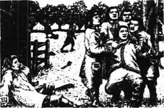
但他们根本不听我说。“你是国王的敌人，”他们说，“而对你的惩罚就是将你处死。”
我试图向他们辩解，当他们将手放到我身上时，我将其中一名士兵打翻在地。这让他们越发生气了，上尉命令手下将我绑在树上立即枪毙。
我无力对抗二十个人，只能闭上眼睛尽量去想洛娜和母亲。上尉下令开枪，但与此同时，我听到一匹马朝我们奔过来，另一个声音高喊道：“住手！”
是杰里米·斯蒂克尔斯！他骑着马站在我和枪支之间，开始同上尉争辩。他的声音是长久以来我听到过的最动听的嗓音！
争辩很快就结束了。我听见杰里米有一两次提到了杰弗里斯法官的名字，没多久他便说服了上尉不枪毙我。“这个叫约翰·里德的人是我的犯人，”杰里米说，“我会带他回伦敦接受审讯的。”
我们一同骑马离开，我真心地感谢杰里米救了我的命。
“你还没有脱离危险，约翰，”他说道。“我知道你不是国王的敌人，但很多人不会相信你。如果你想继续做一个自由人，保留自己的农庄和土地，就只能去做一件事——你必须跟我去伦敦，把你的故事告诉杰弗里斯法官。”
12．Love and revenge
12
Love and revenge
London, of course, was where Lorna was, but it was five weeks before I saw her. Because I was a kind of prisoner, I was not allowed to move freely around the city and I had to report every day to the judges' rooms. However, I came before Judge Jeffreys at last. He remembered me, believed my story, and gave me papers which said I was a free man and an honest servant of the King.
I was now free to go and see Lorna but, to tell the truth, I was a little afraid. It had been a year since she left Exmoor — a year without one word or letter from her. Did she remember the old days in our farmhouse? Did she still love her poor, simple farmer, a man without great riches or a famous family name? It was true that the Ridds had held their own land on Exmoor for hundreds of years, but Lorna came from a family that had Scottish kings in its history.
Everybody in London knew Lady Lorna Dugal. They spoke of her great beauty, and told me how rich she was, and that the Queen was very friendly with her. But if Lorna still loved me, then neither riches nor a proud family would keep me away from her.
So, with fear and hope in my heart, I went to Earl Brandir's house. It was a very grand place. I was taken upstairs to a little sitting-room, and told to wait. Then, suddenly, the door opened and Lorna was standing before me, in a simple white dress, with her long black hair falling down her back. She was more beautiful than ever.
She came towards me, holding out her hand. Gently, I took her hand in mine, then bent and kissed it.
'Is that all?' she whispered. I saw the shine of tears in her eyes, and in another second she was crying in my arms.
'Darling Lorna,' I cried, holding her close to me. 'I love you dearly, but surely, you don't care for me now.'
'Yes, I do, John. Yes, I do. Oh, why have you behaved so unkindly?'
'I am behaving,' I replied, 'as well as I can. No other man in the world could hold you like this, without kissing you.'
'Then why don't you do it, John?' asked Lorna, looking up at me, with a laugh in her bright eyes.
After that, of course, there was no more talking, for about five minutes. Then my darling pulled away from me, and began to question me.
'John Ridd, you must tell me the truth, the whole truth. Why have you never, for more than a year, taken any notice of your old friend, Lorna Doone?'
'Because,' I answered, 'my old friend, and true love, sent me not one word or letter in all that time.'
'What!' cried Lorna. 'Oh no, my poor John! I have often suspected something like this, but she always said —' With these words, she rang a bell very violently, and a few seconds later her servant, little Gwenny, came in.
'Gwenny,' said Lorna, 'what have you done with all the letters I gave you to send to Mr Ridd? No more lies, now.'
Gwenny gave me a very black look. 'I didn't send them,' she said. 'You're a grand lady now, mistress. You should marry some grand lord, not a poor farmer from Exmoor. I was only thinking of you.'
'Gwenny, you may go,' said Lorna, her voice full of quiet anger. 'I don't want to see you or speak to you for at least three days.'
At this, Gwenny ran out of the room, crying noisily, and Lorna turned to me. 'Oh John, try not to be too angry with her. She loves me very much, and I'm afraid that if you take me, you'll still have to take Gwenny too.'
'I'll take fifty Gwennies,' I said, 'if you want me to.'
After this, we spoke of ourselves. I tried to tell Lorna that, when she was free to decide her own future, she must think very carefully. The world would say she was mad if she chose to become a farmer's wife. Of course, at Plover's Barrows farm she would have a comfortable home, plenty of good food, and all the love and care I could give her. But it was not the same as being a grand lady, who owned half of Scotland and who could marry any lord she wanted.
Lorna could not wait for me to finish. 'I decided long ago, dear John,' she said, very seriously, 'that you must be my husband. I think it was the day you climbed up the waterfall, with your shoes off, and a bag of fish for your mother. So, after all these years of loving, shall little things like money and a family name separate us? They mean nothing. I have not been here a year, John, without learning something. Oh, how I hate it! Only my uncle and Gwenny really care for me. All the rest are only interested in my land and money. Oh John, you must never leave me — it would break my heart.'
Of course, I gave in at once, and said, 'Darling, you must do exactly what you please.'
For that she gave me the sweetest of kisses; and as I left, I went grandly down the great stairs of Earl Brandir's house, thinking of nothing else except that.
* * *
For the rest of my time in London I went to see Lorna every day, forgetting all about my poor mother and the work that needed doing on the farm. Then one day I received a letter from Lizzie, and I realized that I must get home as quickly as possible. My darling Lorna cried and held me close, but she understood why I had to go.
Lizzie's news was this: Jeremy Stickles and his soldiers had finally made their attack on Doone valley — but it had failed, and Jeremy had been injured. This was the worst possible thing for Exmoor. Now the Doones would make more trouble than ever before — and of course they would attack our farm.
When I got home, I learnt that the Doones were robbing everyone around them, and the whole of Exmoor was living in fear of them. Then a few weeks later something even more terrible happened.
The Doones came one evening to the farmhouse of Kit Badcock, a neighbour of ours, while he was out working in his fields. They broke down the door and stole his young wife Margery. Two of them carried her, screaming and fighting, to their horses, and then rode away. Meanwhile, the other Doones were searching the house for food and drink to steal, and one of them found the Badcocks' little son crying in the kitchen. He picked the baby up, threw him into the air, and let him fall on to the hard stone floor. The child's neck was broken, and he died at once.
It made me sick just to think of the cruelty of this man, and when people heard this terrible story, they were very angry. They said it was time for the people of Exmoor to take their own revenge.
Men from all the farms and villages of Exmoor came to see me. 'We cannot expect any more help from the King against the Doones,' they told me. 'Because Jeremy Stickles's attack failed, the King has refused to send any more soldiers. But we've had enough of the Doones. We want to attack them ourselves, and we want you to lead us, John.'
I said I was no leader, but they would not listen to this. 'Try to lead us,' they said, 'and we will try to follow.'
In the end I agreed to do as they asked. I thought we had a chance against the Doones, if enough of us decided to fight. There were fewer of them now — some had been killed in the rebel fighting, and some during Jeremy's attack. We arranged to meet again and make a plan. Tom Faggus, now quite well, rode over to join us — and he soon had a very clever idea.
'We're not soldiers,' he said, 'and we'll never defeat the Doones if we try to fight all of them in their valley. So we must lay a trap. You know the caves on Exmoor where gold was once found? Well, we'll tell a story around Exmoor that men have been digging secretly and have found a new cave, with rocks full of gold. We'll say that the gold will be taken away on a certain night, at a certain time. The Doones will naturally plan to attack and steal this gold, but some of us will make a trap for them in the caves. Meanwhile, the rest of us will attack the valley, as soon as we know that some of the robbers have left.'
The second part of our plan was this: Tom would take some of our men and pretend to attack the Doone gate, while our main attack would really come from the waterfall end of the valley — the route I had discovered so long ago.
The plan went well. The story about the gold was whispered in the right ears, and on the agreed night our spies watched a large group of robbers leave Doone valley on their way to the caves. Meanwhile, as the moon rose above the hills, I was leading my twenty men to the bottom of the waterfall. John Fry, our old farm-worker, was in the mountains which looked down into the valley. When he saw the fighting start at the Doone-gate, he would fire his gun as a signal to us.
Soon the sound of John's gun rang around the mountains, and I and my men climbed up the waterfall and into the valley. Tom's men were making as much noise as possible at the Doone-gate, and all the Doones had run to join the fight there. We went quietly along the valley, keeping to the shadows under the trees, until we came to the Doone-town. Then we got to work with our fire sticks, and before long every Doone house was on fire. We took good care, however, to burn no women or children, and we made sure that they were all out of the houses first.
When they saw the flames and smoke rising from their houses, the Doone men came running back from the gate. By the time they reached us, the whole valley was burning — houses, trees, everything, right up to the sides of the mountains. As the men came towards us, we saw that there were only twelve of them. In the bright firelight, they could not see us, but we had them right in front of our guns. There were so few of them that I thought we could take them as prisoners. But my men did not wait for a word from me — they saw the chance of revenge on the men who had burnt their homes and stolen their women for so many years. They fired, and five Doones fell dead.
The robbers fired back wildly, but they could not see us clearly in the shadows. Soon all the guns were empty and the battle became hand-to-hand fighting, with knives and sticks. I stood to one side — the only Doone I wanted to meet was Carver. But as I started-to look for him, I saw something white in the grass, moving close to the ground. I ran to see what it was, and found the Counsellor. I recognized him from Lorna's descriptions, and here he was, on his hands and knees, trying to escape from the fighting. The white thing I had seen was his long white hair. When he saw me, he got to his feet. He knew at once who I was.
'John Ridd!' he said. 'Won't you be kind to an old man? Let me get away from this violence, John.'
'I will let you go free, sir,' I said, 'but on one condition. Tell me honestly, which Doone killed my father?'
'I will tell you honestly,' he said, 'though it hurts me to say it. It was my son, Carver.'
'I thought it was him,' I said. 'But you were not there, so I don't blame you.'
'I've always been against violence,' the Counsellor said, shaking his head sadly. 'And now, John, let me go.'
He was an evil, lying old man, but I let him go. I don't know what happened to him, but he was never seen again on Exmoor.
Then I went to look for Carver, but did not find him. Afterwards, I heard that he had led the Doones who had gone to the gold caves. Our trap was successful, and all the Doones had been killed — all except Carver, who had ridden his horse through the attackers and escaped.
The Doones were totally defeated, though. When the sun came up above their valley the next day, all their houses were nothing but blackened wood. We had lost sixteen men in the fighting, but out of nearly forty Doone men, only Carver and the Counsellor were left alive.
But the thought that Carver, that cruel and violent man, was still living somewhere on the moors, did not give me much peace.
Scottish adj. of or relating to Scotland or its people 苏格兰（人）的
question v. to ask questions to find out what they know about something 质问
black adj. full of feelings of anger or hate 生气的
think of take into account or consideration 着想；考虑
noisily adv. full of or making a lot of noise 大声地
care for look after and provide the needs of 关心
break one's heart overwhelm someone with sadness 让……心碎
give in cease fighting or arguing 屈服；让步
have enough of be thoroughly tired or sick of something and want it to stop 受够了
burn v. to hurt someone with fire or heat 烧伤
evil adj. someone who deliberately does very cruel things to harm other people 邪恶的
lying adj. not telling the truth 撒谎的
blackened adj. becoming or made black or dark 烧黑的
爱与复仇
12．爱与复仇
伦敦，当然就是洛娜所在的地方，但我直到五个星期后才见到她。由于我算是一名犯人，所以不能随意在城中走动，还必须每天去法官们的办公室报到。但是，我最后还是见到了杰弗里斯法官。他还记得我，相信我说的事情，还给我开具了一些文件来证明我是自由人，是国王忠实的仆人。
我现在自由了，可以去见洛娜了，但是说实话，我有一点担心。她离开埃克斯莫尔已经一年了——一年以来音讯全无。她还记得在我家农舍里度过的那些日子吗？她还爱着她那个贫穷普通的农夫、那个既没有财富也没有显赫家世的人吗？尽管几百年来，里德一家的确一直在埃克斯莫尔拥有自己的土地，但洛娜可是出身于一个历史上曾出过苏格兰国王的家族。
在伦敦，人人都知道洛娜·杜加尔女勋爵。他们谈论着她那闭月羞花之貌，告诉我她是多么富有，还说女王对她非常友好。但是，如果洛娜依然爱我，那么无论是财富还是值得骄傲的家族都不能阻止我跟她在一起。
于是，我怀着担忧和希望来到了布兰迪尔伯爵的府第。这是个雄伟豪华的地方。我被带到了楼上的一间小起居室，并被告知在此等候。不久，门突然开了，洛娜穿着一袭简单的白衣站在我面前，长长的黑发垂在后背上。她比以前更美丽了。
她走向我，伸出手来。我温柔地握住她的手，弯腰吻了一下。
“就这些吗？”她柔声说。我看见了她眼中的莹莹泪光，紧接着她便倒在我臂弯中抽泣起来。
“亲爱的洛娜，”我将她紧紧拥在怀中大声说道，“我深爱着你，但你现在显然已经不在乎我了。”
“不，我还在乎你，约翰。真的，我在乎你。哦，你为什么这么冷淡呢？”
“我在尽力控制自己，”我回答道，“这世上没有别的男人能像这样抱着你，却不吻你。”
“那你为什么不吻我呢，约翰？”洛娜边问边抬起头望着我，明亮的眼中带着一丝笑意。
当然，此后大约五分钟内，我们没有任何言谈。接着，我亲爱的洛娜从我怀中抽出身，开始质问我。
“约翰·里德，你必须告诉我真相，全部的真相。为什么这一年多以来，你完全不顾念自己的老朋友洛娜·杜恩？”
“那是因为，”我回答道，“我的老朋友，也是我的挚爱，一直以来都没有给我捎去任何消息或是信件。”
“什么？”洛娜大喊道，“哦，不，我可怜的约翰！我一直都在怀疑是不是发生了这样的事，但她总是说——”说着，她使劲按动响铃。几秒钟后，她的仆人小格温妮走了进来。
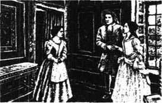
“格温妮，”洛娜问道，“我让你寄给里德先生的信呢，你都怎么处理了？别再撒谎了，说。”
格温妮向我怒目而视。“我没把它们寄出去，”她说，“您现在是有身份地位的女勋爵，小姐。您应该嫁给一位显赫的爵士，而不是埃克斯莫尔的穷苦农夫。我只是在为您着想。”
“格温妮，你可以走了，”洛娜说着，她的声音尽量压抑着心中的愠怒，“至少三天之内，我都不想见到你或是跟你说话。”
听到这番话，格温妮嚎啕大哭着跑出了房间。洛娜转向我说：“哦，约翰，别对她太生气。她很爱我，而且我想如果你想接受我，恐怕也得接受格温妮。”
“要我接受五十个格温妮都可以，”我说，“只要你愿意。”
此后，我们谈起了我俩的事。我试探着告诉洛娜，等到她可以自由决定自己的将来时，必须非常慎重地考虑。要是她选择做一名农夫的妻子，世人都会说她疯了。当然，她可以在普罗沃斯巴若斯农庄拥有一个舒适的家、丰富的美食以及我所能给予的全部的爱和呵护。但这样的生活同拥有半个苏格兰、能嫁给任何一名爵士的高贵女勋爵的生活是迥然不同的。
洛娜不等我把话说完。“我很久以前就已经决定了，亲爱的约翰，”她非常严肃地说，“你必须成为我的丈夫。我想应该就是在你光着脚、带着一包为你母亲抓的鱼爬上瀑布的那天吧。所以，经过了这么多年相亲相爱的日子，难道像金钱和家族声望这样的小事会将我们分开吗？它们一文不值。约翰，我在这里的一年，也让我体会到一些事情。哦，我真讨厌这样的生活！只有舅公和格温妮真的关心我，别人都只是对我的田产和财富感兴趣。哦，约翰，你永远都不要离开我——那样会让我心碎的。”
当然，我立刻就屈服了。我说：“亲爱的，你必须按照自己的意愿来做。”
听到这话，她给了我最甜蜜的吻。离开时，我愉快地走下布兰迪尔伯爵家宽大的楼梯，心中只想着那些甜蜜的吻。
* * *
接下来呆在伦敦的日子里，我每天都去看望洛娜，完全忘记了可怜的母亲和农庄里需要我干的活。直到有一天，我收到了莉齐的信，意识到自己必须尽快赶回家。我亲爱的洛娜哭着紧紧抱住我，但她理解我为什么必须要走。
莉齐信上写道：杰里米·斯蒂克尔斯和他的士兵们终于对杜恩山谷发动了袭击——但却惨遭失败，杰里米还受了伤。这对于埃克斯莫尔而言，是最糟糕的事。现在，杜恩家族的人将会比以前制造更多的麻烦——当然，他们一定会袭击我家的农庄。
我到家后，得知杜恩家族的人正在附近到处抢劫，整个埃克斯莫尔的人都生活在对他们的恐惧中。几个星期后，更可怕的事情发生了。
一天晚上，杜恩家族的人趁我们的邻居基特·巴德科克在田间劳作时来到了他家的农舍。他们破门而入，抢走了他年轻的妻子玛格丽。两个人将哭喊挣扎着的玛格丽带上马，扬长而去。与此同时，其他杜恩家族的人在屋里四下搜寻食物和酒，其中一人发现了巴德科克家的小儿子在厨房里哭泣。他将小孩子拎起来抛到空中，任其摔落到坚硬的石头地面上。小孩的脖子摔断了，当场毙命。
一想到那人的残忍，我就感到恶心。当人们听说了这个可怕的事情后，群情激愤。他们说，埃克斯莫尔的人复仇的时候到了。
埃克斯莫尔所有农庄和村落的男人们都来见我。“我们不能再指望国王援助我们来抗击杜恩家族了，”他们对我说，“杰里米·斯蒂克尔斯的袭击失败了，国王拒绝派遣更多的士兵来。但我们已经受够了杜恩家族的欺负。我们想自己发动袭击，希望你能领头，约翰。”
我说自己不是做头儿的料，但他们不肯听。“请试着领导我们，”他们说，“我们也会试着听从你的指挥。”
最后，我答应了他们的请求。我认为如果有足够多的人决定参加战斗，我们就有机会打败杜恩家族。现在对方的人数已经减少了——有些在叛乱中被杀掉了，另一些则在杰里米发动的袭击中战死了。我们又安排了一次会面，制定了一个计划。汤姆·费格斯已经恢复健康，他也骑马赶来加入了我们的行列——很快，他便想到了一个聪明的办法。
“我们不是士兵，”他说，“若是跟杜恩家族的所有人在杜恩山谷中作战，我们永远也无法战胜他们。因此，我们必须设一个圈套。你们知道埃克斯莫尔那些曾发现过金矿的山洞吗？呃，我们就在埃克斯莫尔附近散布消息，说有些人一直在秘密挖掘，而且已经发现了一个满是金矿的新山洞。我们放出消息，说这些金矿石会在某一天夜里的某一个时刻被运走。杜恩家族的人自然会计划发动袭击、抢走金矿石，而我们当中的一部分人将在山洞中为他们布下陷阱。与此同时，剩下的人一旦得知部分强盗已离开山谷，就向山谷发动进攻。”
我们计划的第二部分是这样的：汤姆将带领我们当中的一部分人假装袭击杜恩大门，而我们的主要进攻点却是山谷尽头的瀑布那里——也就是我很久以前发现的路线。
计划进展得很顺利。关于金矿石的消息通过恰当的途径散布开来。在我们计划好的那天夜里，我们的探子观察到一大群强盗离开了杜恩山谷，踏上了前往山洞的路。与此同时，当月光照耀到山头时，我正带领手下的二十人前往瀑布下方。约翰·弗赖伊，我家农庄上的老伙计，正在山头俯视着山谷。等他一看到杜恩大门口的战斗打响，就会鸣枪给我们信号。
很快，约翰的枪声便在群山间回响了起来。我和我的手下爬上瀑布，冲进了山谷。汤姆的手下正在杜恩大门竭尽所能制造响动，杜恩家族所有的人都跑过去加入那里的战斗了。我们在树影下静悄悄地一路走进山谷，直捣杜恩镇。接着，我们开始用火把放火。没过多久，杜恩山谷里的每一栋房子都燃烧起来了。不过我们很小心，没有烧到任何妇女和儿童，并事先确保他们都出了房门。
当杜恩家族的男人们见到自家房子上升腾起火光和烟雾时，都从大门那儿跑了回去。等到他们靠近我们时，整个山谷都在燃烧——房屋、树木，所有的一切，一直烧到山边。当他们朝这边过来时，我们看到他们只有十二个人。在明亮的火光中，他们看不见我们，但我们的枪口却已瞄准了他们。他们的人数这么少，我觉得我们可以活捉他们。但我的手下没等我发号施令——他们瞅见了机会，能向这些多年来烧毁他们家园、抢夺他们妻子的仇人们报复。他们开了枪，五个杜恩家族的人倒地毙命。
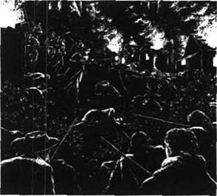
强盗们疯狂地开枪还击，但却无法看清躲在树影中的我们。很快，所有的枪支都没有子弹了，战斗变成了使用刀棍的白刃战。我站在一旁——我唯一想见到的是卡弗·杜恩。但当我开始找寻他的踪影时，却发现草丛中有个白色的东西正贴着地面移动。我跑过去看个究竟，发现是亲王。我根据洛娜以前的描述认出了他，他在那儿试图爬着逃离战斗。我所看见的白色东西是他那长长的白胡子。当他看见我时，便站起身来。他立刻知道我是谁了。
“约翰·里德！”他说道，“你不会对一位老人不客气吧？让我离开这场混战吧，约翰。”
“我会让你离开的，先生，”我说，“但我有一个条件。老实告诉我，是杜恩家族的哪个人杀害了我的父亲？”
“我会跟你说实话，”他说，“虽然这么说让我很伤心。是我的儿子卡弗干的。”
“我就知道是他，”我说，“但你当时并不在场，所以我不怪你。”
“我一直都反对暴力，”亲王边说边哀伤地摇着头，“好了，约翰，让我走吧。”
他是个邪恶的、满嘴谎言的老头，但我还是放他走了。我不知道他后来怎么样了，但此后没人再在埃克斯莫尔见过他。
接着，我去找卡弗，但却没找到。后来我才听说他带领杜恩家族的人去金矿山洞了。我们的陷阱很成功，所有杜恩家族的人都被杀掉了——除了卡弗。他骑着马突破重围逃脱了。
不过，杜恩家族的人已被彻底击败了。第二天，当太阳照耀着他们的山谷时，所有房屋都已成了烧黑的木头。我们在战斗中牺牲了十六个人，但杜恩家族将近四十个人中，只有卡弗和亲王两人还活着。
可是，一想到卡弗这个残暴的家伙还活在这片沼泽地上，我就不得安宁。
13．The last battle
13
The last battle
The next thing that happened was the return of Lorna — my Lorna, my own darling. She stepped out of her coach and ran into the house, as happy as a bird to get home again. All the house was full of brightness and sunshine as she ran here and there, laughing and talking. Oh, how she loved this old chair, and she must see the kitchen fire, and where was her old friend the cat? As for me, I threw my best hat over the hay ricks and shouted for happiness.
Lorna was now free to make her own decisions, she told us. Earl Brandir had died. She had grown to love this fine old gentleman, and was very sad at his death. But now she could do what she wanted — even marry that good servant of the King, John Ridd.
At last, the waiting and the worrying was over, and happiness was ours. But in her softest moments, when she was alone with me, Lorna could not quite hide the fear that still lay deep in her heart. I felt it too — a fear that something evil, something terrible, could still happen.
There was great excitement all over Exmoor when people heard of our wedding. Everyone had heard of the defeat of the Doones, and the strength of John Ridd, and the beauty of Lorna. People came from more than thirty miles around.
Mother, Annie, and Lizzie arranged everything, with the help of Uncle Ben's granddaughter, Ruth, who had also come for the wedding.
When the day came, and Lorna stepped up to my side in Oare church and took my hand, I was afraid to look at her. She was so beautiful, so fresh and lovely in her simple white dress. But when we had each said 'I will', and my ring was on her finger, we turned to each other. Her laughing eyes were serious now, and full of so much love that my heart nearly stopped beating. Darling eyes, the loveliest, the most loving eyes — then the sound of a shot rang through the church, and those eyes were clouded with death.
Lorna fell at my feet, and her bright red blood ran over the wooden floor. I lifted her up, whispering soft words of love, but as she leant her head on my chest, her eyes closed and she breathed her last goodbye to life. Then I laid my wife in my mother's arms — and went out for my revenge.
Of course, I knew who had done it. There was only one man in the world who could do a thing like this. I jumped on my horse and rode away fast. I don't remember who showed me the way. I only know that I took it. And the men fell back before me.
Soon the shouts of some men told me that I was getting close. And there, ahead of me, rode a man on a great black horse; and I knew that the man was Carver Doone.
'His life, or mine,' I said to myself; 'whatever God decides. But the two of us cannot live in this world one more hour together.' I had no weapons, and I knew he had a gun, but I also knew, as surely as night follows day, that I would kill this man.
He rode up onto the moors, and I followed. His horse was fast, but he did not know this part of Exmoor. He rode straight into a little valley from which I knew there was no escape — because at the end of it there was only a black, bottomless bog.
As I rode after him, I reached up to a tree that was growing in the rocks above me, and broke off a great branch. Then Carver turned a corner and saw what he was riding towards. He pulled back from the bog in fear, and turning his horse, he fired, and rode straight at me.
The bullet hit me somewhere, but I took no notice. I put my horse across his path, lifted the branch above my head and brought it down hard on his horse's head. Both horse and man crashed to the ground.
Before Carver could move, I jumped down. He got up with a black look on his face and started to speak. For an answer I hit him on the side of the face. I would not dirty my mouth by speaking to this man now. Then he ran at me and put his hands around my neck. I had never met strength like this, and felt my neck would break. But I took hold of his arm, and almost pulled it from his shoulder. Then I took him by the neck, as he had done to me. His eyes burned with anger, and he threw himself against me. But God gave me great strength that day. In two minutes he was lying on the ground, half dead.
'I will not hurt you any more,' I said, when I could breathe again. 'Carver Doone, you are beaten. Go on your way, thank God you are alive — and never come near me again.'
But it was too late. The black bog had him by the feet. As he lay like a mad dog in front of me, the ground itself began to pull him in. In our murderous battle, we had not noticed where we were going. I only just managed to jump, with my last strength, from the terrible blackness. But I could do nothing for Carver. While his mad eyes stared, and his arms waved wildly above his head, the black bog pulled him down and he disappeared from sight.
I don't know how I got home. I had lost a lot of blood. By the time I got to the farm, I was riding in a dream. John Fry took my horse away and Mother led me indoors.
'I have killed him,' I said, 'as he killed Lorna. Now let me see my wife. She belongs to me, though she is dead.'
'You cannot see her now, John,' said Ruth, coming forward. 'Annie is with her now.'
'What does that matter? Let me see my dead one, and then die.'
All the women moved away from me, crying. Only Ruth stood by me, and put her little hand in mine.
'John, she is not your dead one. She may still be your living one, and your wife. But you must not see her now. The sight of you like this will certainly kill her.'
I could not understand what she was saying, but I let them lead me upstairs to my bed. The bullet had broken a bone in my chest, and I was soon in a fever. It was only much later that I learnt how Ruth had saved Lorna's life.
When I had run out of the church, Ruth had taken control. She made John Fry and the other men carry Lorna home immediately. There, she cut off the wedding dress, pulled the bullet from Lorna's wound, and stopped the bleeding with cold water. All this time, Lorna lay still and white, and everyone was sure that she would die.
But Ruth covered the wound with a cloth, kept her warm, and made her drink a little wine from a spoon. And after a while everyone could see that Lorna was still breathing. She lay close to death for many days, but with Ruth's loving care, she slowly began to get better.
Meanwhile, I lay in my bed, only half-conscious, and in my fever I did not believe them when they told me Lorna was still alive. I knew in my heart that she was dead, and I had no interest in life — a life without Lorna was worthless, without meaning.
Mother cried, and thought that I would die, but after six weeks the fever left me. I was so weak that I could not leave my room. Outside, the sun shone on the spring flowers, but in my misery I cared nothing for the beauty of the world.
Then, the next morning, Ruth came to see me. 'John,' she said, 'are you well enough to see your wife? I was afraid to bring her before, while you were so ill.'
'I don't understand,' I said, staring at her. She went away, then came back, and behind her was Lorna. Ruth closed the door, and ran away; and Lorna stood before me.
But she did not stand for long. She ran to me and managed to get into my arms, although they were too weak to hold her. She put her warm young face against mine, and would not look at me, preferring kissing to looking.
I felt my life come back to me. I felt the happiness of living, and of loving. I felt the sweetness and the sadness of my Lorna's tears, and the softness of her loving lips. And the world, suddenly, was a good place again.
* * *
I have not much more to tell. Over the days that followed, Lorna sat beside me, and we watched each other getting better. We have never tired of watching each other since.
Now, we live peacefully on the farm. Though Lorna still has great riches, we never use the money, except for some poor neighbour. I sometimes buy her beautiful clothes, but she soon gives them away, or keeps them for the children.
Tom and Annie are happy. Except for a few small adventures, Tom remains on the right side of the law, and they have honest children. Lizzie married the captain of Jeremy Stickles's soldiers, who had stayed with us when we fought the Doones. Ruth is not married yet, but there is a man who loves her, as much as I love Lorna, and I'm sure he will win her soon.
But of Lorna herself, my darling wife, I won't say much. A man should not talk too much about the best thing in his life. Year by year, her beauty and her loving kindness grow greater; and after all this time, and all that has happened to us, she is still my Lorna Doone.
bog n. an area of ground that is always very wet and soft 沼泽
murderous adj. capable of, intending, or involving murder or extreme violence 谋杀的；疯狂的
win somebody to gain support or favour of somebody 赢得某人的支持或喜欢
最后一仗
13．最后一仗
接下来发生的事就是洛娜回来了——我的洛娜，只属于我的亲爱的洛娜。她走出马车跑进屋子里，高兴得像一只返巢的小鸟。她有说有笑地跑到这又跑到那，整个屋子里都充满了欢乐和阳光。哦，她多么喜欢这把旧椅子，她得看看厨房里的火，她的老朋友猫咪呢？而我则将自己最好的帽子扔上了干草堆，高兴得放声呼喊。
洛娜告诉我们，她现在可以自己做决定了。布兰迪尔伯爵已经过世了。她已渐渐地喜欢上了这位善良的老绅士，对他的去世感到很难过。但她现在可以做自己想做的事了——甚至可以嫁给那个国王忠实的仆人，约翰·里德。
终于，所有等待和焦虑都结束了，幸福是属于我们的。但当她跟我独处时，在她最温柔的时刻，她仍难掩心中深埋的担忧。我也感觉到了这种担忧的存在——怕还会发生一些邪恶而可怕的事。
当埃克斯莫尔的人们听说我们的婚讯后，全都兴奋不已。人人都听说了杜恩家族的覆灭、约翰·里德的力量和洛娜的美貌。人们从方圆三十英里开外的地方赶来。
在赶来参加婚礼的本叔叔的孙女露丝的帮助下，母亲、安妮和莉齐安排好了一切。
那一天到来的时候，在奥尔村的教堂里，洛娜走到我身边，握住我的手，我不敢看她。她穿着简单的白色礼服，如此美丽、清新、可爱。而等到我们分别说了“我愿意”，我将戒指戴上她的手指后，我们便转向了对方。她笑意盈盈的双眼此刻郑重而充满了爱意，让我的心几乎停止了跳动。那亲爱的双眸，最可爱最深情的双眸——接着，一声枪响在教堂里响起，而这双眼睛蒙上了死亡的阴影。
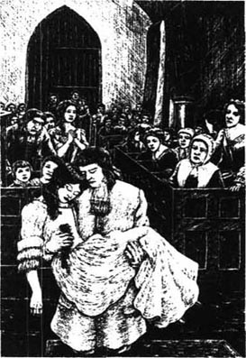
洛娜倒在我脚边，鲜红的血流淌在木地板上。我将她抱起来，轻柔地说着爱抚的话语。但她将头靠在我胸膛上，双目紧闭，奄奄一息，正在渐渐同生命告别。接着，我将自己的妻子放在母亲的臂弯里——出门寻仇去了。
当然，我知道这是谁干的。这世上只有一个人能干出这种事来。我骑上马飞奔而去。我不记得是谁给我指了路，只知道自己一路追去。人群在我面前闪开。
很快，有人叫喊着告诉我，我就快追上了。在我前方有一个骑着大黑马的人，我知道那人就是卡弗·杜恩。
“要么他死，要么我亡，”我对自己说，“让上帝来决定吧。但我们二人已不能再在这世上共存了，多一个小时都不行。”我没有武器，并且我知道他有一支枪。但就像知道黑夜过后必然是白昼一样，我确信自己会杀死这个人。
他骑马跑上了沼泽地，我紧随其后。他的马跑得很快，但他却不熟悉埃克斯莫尔这一带的地形。他径直骑进了一个小山谷，我知道那里没有出路——因为山谷的尽头只有一小片黑暗无底的沼泽。
我一路跟随其后，伸手够向头顶一棵长在岩石上的树，折下了一根粗大的树枝。接着，卡弗转过一个弯，看清了前方的情景。他吓得拉紧缰绳躲开沼泽，调转马头开了一枪，朝我径直冲过来。
子弹射中了我身上某个地方，但我毫不在意。我将自己的马挡在他前进的路上，把树枝举过头顶，向下用力打在他的马头上，使他连人带马跌落在地。
还没等卡弗动弹，我便跳下了马背。他恶狠狠地站起身，想开口说话。作为回答，我击中了他的脸。我现在不能开口跟这人说话，免得弄脏了自己的嘴。接着，他朝我扑过来，双手掐住了我的脖子。我从没见过如此巨大的力量，觉得自己的脖子都快断了。但我抓住了他的胳膊，几乎要把它们从他肩上撕扯下来。接着，我也照他先前掐我那样掐住了他的脖子。他眼中燃烧着怒火，将身体向我压过来。但上帝那天赐予了我巨大的力量。两分钟后，他半死不活地躺倒在地。
“我不会再打你了，”等喘过气来之后，我说道，“卡弗·杜恩，你被打败了。你走吧，你得感谢上帝你还活着——别再靠近我了。”
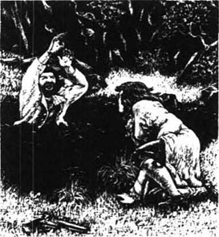
但这话已经太迟了。黑色的沼泽缠住了他的双脚。当他像条疯狗一样躺在我面前时，地面开始将他拉入沼泽。在你死我活的打斗中，我们都没注意到正在向沼泽靠近。我凭借最后一丝力气勉强跳出了那片可怕的黑暗。但对卡弗，我已无能为力。他瞪圆了疯狂的双眼，双手在头顶狂乱挥舞。黑暗的沼泽将他拉了下去，他从我眼前消失了。
我不知道自己是怎么回到家的。我大量失血，好像在梦游一样骑马回到农庄。约翰·弗赖伊将我的马牵走，母亲把我引进了屋子里。
“我把他杀了，”我说，“因为他杀了洛娜。现在让我看看我的妻子吧。她是属于我的，虽然她已经死了。”
“你现在不能见她，约翰，”露丝说着走上前来，“安妮正陪着她。”
“那又怎么样？让我看看我的亡妻，然后随她而去吧。”
所有女人都哭着从我身边走开了。只有露丝站在我身旁，将她的小手放到我手中。
“约翰，她不是你的亡妻。她有可能还活着，还是你的妻子。但你现在一定不能见她。你这副模样肯定会害死她的。”
我不明白她在说什么，但还是任由他们将我带到了楼上自己的床上。子弹打断了我胸部的一根骨头，我很快就开始发烧了。过了很久之后，我才得知露丝是如何救了洛娜的命的。
当时我跑出教堂后，露丝稳住了局面。她让约翰·弗赖伊和其他男人一起立刻将洛娜抬回家。在家里，她剪开婚礼礼服，从洛娜的伤口中取出了子弹，用凉水止住了血。在此期间，洛娜面色惨白、一动不动地躺着，人人都以为她必死无疑。
但露丝用一块布为她包扎了伤口，替她保暖，用勺子喂她喝了点酒。过了一会儿，大家都看出洛娜仍在呼吸。她卧床数天，一直在死亡的边缘挣扎，但在露丝的精心照料下，她慢慢有了好转。
与此同时，我一直处于半昏迷状态，卧床不起。当他们告诉我洛娜还活着时，高烧中的我不肯相信他们的话。我打心底认为她已经死了，而自己也对生活失去了兴趣——没有洛娜的人生没有价值，毫无意义。
母亲哭了，她认为我要死了，但六星期以后，我的烧退了。我很虚弱，还不能离开房间。窗外，阳光照耀着春天的鲜花，但囿于悲痛中的我却无心欣赏这世界的美丽。
接着，第二天早上，露丝来看我。“约翰，”她说，“你恢复得怎么样了，能见你的妻子了吗？你病得厉害的时候，我不敢带她过来。”
“我不明白你在说什么，”我盯着她说。她走了出去，过了一会儿又回来了，站在她身后的正是洛娜。露丝关上门跑开了；洛娜站在了我面前。
但她没站多久。她跑过来扎进我怀里，尽管我的双臂尚无力将她抱住。她将温暖而年轻的脸颊贴在我脸上；她不想看着我，她更想吻我。
我觉得自己又恢复了生命的活力，感受到了生活的快乐，爱的快乐。我感受着我的洛娜喜忧参半的泪水和深情柔软的双唇。世界霎那间又变成了美好的所在。
* * *
我没更多要说的了。在接下来的日子里，洛娜陪在我身边，我们彼此看着对方慢慢恢复健康。此后，我们从未厌倦过这样的凝望。
如今，我们在农庄过着平静的生活。虽然洛娜仍然很富有，我们却从不花这些钱，只是用来接济贫苦的邻居。我偶尔会给她买漂亮的衣服，但她很快就将它们送人了，或是留给孩子们。
汤姆和安妮过得很幸福。除了几次小小的冒险外，汤姆一直遵纪守法，他们的孩子也都很诚实。莉齐嫁给了杰里米·斯蒂克尔斯手下的一名上尉，他在我们抗击杜恩家族期间曾住在我家。露丝还没有嫁人，但有个人很爱她，就像我爱洛娜一样。我敢肯定他很快就会赢得她的芳心。
但我不会对洛娜——我亲爱的妻子发表过多的评论。男人不应多谈论自己一生中最珍贵的东西。年复一年，她的美貌和善良与日俱增。在经历了漫长的岁月和诸多波折后，她仍是我的洛娜·杜恩。
ACTIVITIES: Before Reading
ACTIVITIES
Before Reading
1．Read the story introduction of the book. How much do you know now about the story? Are these sentences true (T) or false (F)?
1) Exmoor is a place where few people live. T/F
2) The Doones live on a hill on Exmoor. T/F
3) John comes from a family of farmers. T/F
4) John's father is shot while stealing from a farm. T/F
5) Lorna looks beautiful, but she is cold and proud. T/F
6) Two men want to marry Lorna Doone. T/F
2．Can you guess what will happen in the story? Choose answers to these questions.
1) Who will die?
a) Lorna Doone.
b) John Ridd.
c) Carver Doone.
d) John Ridd's mother.
2) Who will marry Lorna Doone?
a) Carver Doone.
b) John Ridd.
c) Somebody else.
d) Nobody.
3) What will happen to the Doones in the end?
a) They will be caught and put in prison by the soldiers.
b) They will move to another part of the country.
c) They will continue to rob and murder on Exmoor.
d) Most of them will be killed in a battle with Exmoor farmers.
ACTIVITIES: While Reading
ACTIVITIES
While Reading
1．Read Chapters 1 and 2. Choose the best question-word for these questions, and then answer them.
What / Why
1) ... did John remember the family in the coach?
2) ... was the news at home that John didn't want to hear?
3) ... didn't the local people fight back when the Doones attacked them?
4) ... did John go looking for on Saint Valentine's Day?
5) ... did John want to climb the waterfall?
6) ... seemed to make Lorna sad?
7) ... did Lorna tell John to go?
2．Read Chapters 3 to 5. Are these sentences true (T) or false (F)? Rewrite the false ones with the correct information.
1) Tom Faggus robbed the rich, but he never hurt anyone.
2) Uncle Ben did not see any way of attacking Doone valley.
3) When John saw Lorna again, he fell deeply in love.
4) Lorna could not remember her early childhood.
5) She told John that Carver Doone was kind and gentle, and she would be happy to marry him.
6) When John left, he promised to come back the next week.
7) Jeremy Stickles came to the farm to arrest John.
8) John thought London was an unpleasant place.
9) Judge Jeffreys sent John home to spy for the King.
3．Before you read Chapter 6 (Lorna's new troubles), what do you think those troubles will be? Choose some of these ideas.
1) The Doones try to force Lorna to promise that she will marry Carver.
2) Lorna's grandfather dies, and Lorna has to marry Carver.
3) John fights Carver Doone, and gets hurt.
4) The Doones find out about John's visits.
5) The Doones keep Lorna prisoner in her house.
6) Lorna has no way of getting a message to John.
4．Read Chapters 6 to 8. Who said this, and to whom? Who, or what, were they talking about?
1) 'They say it's for the peace of the Doones.'
2) 'I thought you were much too honest and simple ever to do something like this!'
3) 'I was going mad, because I didn't know what had happened to you.'
4) 'I'm afraid he won't live long.'
5) 'I know she will love you with all her heart.'
6) 'You must bring her here, and I will teach her how to be a farmer's wife.'
7) 'We've been kept in here for days without food.'
8) 'I shall wear it, my love, till the day I die.'
9) 'It means that I am not a criminal any more.'
10) 'I have been sent to do important work.'
11) 'Ten of them, coming across the river. They'll be here in a minute.'
12) 'I will kill any man who touches her.'
5．Read Chapters 9 to 11, and then answer these questions.
1) Who was Lorna, and what happened to her real parents?
2) Who was the 'old enemy' that Lorna's mother recognized?
3) In what way did the 'blackest and unhappiest' day of John's and Lorna's childhood join their lives together?
4) How did Lorna feel about marrying a simple farmer now?
5) Why did the Doones never tell Lorna who she really was?
6) Why did Lorna have to go to London'?
7) Why did John think Lorna had forgotten about him?
8) How did John help Tom Faggus?
9) Why was John so pleased to see Jeremy Stickles again?
6．Before you read Chapters 12 and 13, how do you think the story ends? Choose some of these ideas.
1) John finds Lorna in London, and she still loves him.
2) Earl Brandir refuses to allow Lorna to marry John.
3) Lorna has married a rich lord, but runs away with John.
4) Jeremy Stickles and his soldiers attack Doone valley.
5) John leads the Exmoor people in an attack on the Doones.
6) The Doones' houses are burnt and all the men die in the fires.
7) All the Doones are killed except Carver and his father.
8) John marries Lorna and goes to live in London.
9) Carver Doone shoots Lorna at the wedding and kills her.
10) Carver shoots John, who nearly dies from his wound.
11) John fights Carver to the death and breaks his neck.
12) After a terrible fight, John watches Carver die.
13) The story ends happily.
ACTIVITIES: After Reading
ACTIVITIES
After Reading
1．Here is Ruth, writing about the day of the wedding in her diary. Put the parts of sentences in the right order, and join them with these linking words to make a passage of seven sentences. Start with number 10.
after / and / and / and after / because / but / however / so / when / where
1) badly wounded from his fight with Carver,
2) ______ we heard the sound of Carver's gun in the church.
3) ______ at last he realized that his wife was alive and well.
4) I told the men to carry Lorna home.
5) ______ in his fever the poor man did not believe us.
6) I managed to make her drink a little wine.
7) ______ we put him to bed too,
8) ______ I took Lorna to see him for the first time,
9) There, I cut off her wedding dress, took out the bullet,
10) It was a terrible moment
11) ______ he lay in a fever for several weeks.
12) Today, he is the happiest man on earth,
13) ______ John had run out to chase Carver,
14) ______ yesterday John's fever left him.
15) We told him many times that Lorna was still alive,
16) Then John arrived home,
17) ______ I had stopped the bleeding,
18) Slowly, ______, both he and Lorna began to get better,
2．Perhaps this is what some of the characters in the story were thinking. Which six characters were they, and what was happening in the story at that moment?
1) 'She's a lovely girl, and we're very happy together, but oh! Life on the farm is so boring! And just a few hours away there's excitement, and fighting, and adventure... It's no use, I have to go...'
2) 'What on earth is he thinking of? In love with a Doone! The family that killed his father! I don't know whether to cry, or hit him, or go away from here right now...'
3) 'It's just not right! She's a lady now, with grand friends — why is she still writing to that rough farmer? Well, I'll have nothing to do with it — I'm going to hide this one too...'
4) 'I'll have to tell him now, but I don't think he's going to like it. He's a good, honest man, but he's only a simple farmer, and when this news gets out, that young lady will be able to marry any man in the country...'
5) 'I'll make him sorry that he pulled my beard! He won the battle tonight, but I'll be back. And then he'll be on his knees in front of me! Lorna belongs to me, and nobody — nobody is going to keep her from me...'
6) 'He's certainly big and strong, that young man. And he looks me straight in the eye when he answers a question. I like that. But a spy? I don't think so. He's too honest — you can read his face like a book...'
3．There are 18 words from the story hidden in this word search. Find the words and draw lines through them. The first and last letters of each word are given below, and the words go from left to right and from top to bottom.
A______K D______D M______R S______D V______Y
B______G F______E N______T S______L W______L
C______H G______P R______L S______M
D______G I______N S______D S______Y
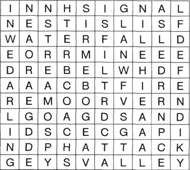
Now write down all the letters that don't have a line through them (begin with the first line and go across each line until the end). You will have 31 letters, which make a sentence of 7 words.
1) What is the sentence?
2) Who said it, and to whom?
3) What did happen, in the end?
4．Complete this letter from Jeremy Stickles to Judge Jeffreys, using the words below.
broke, broken, buried, burning, defeated, farm, have, living, lost, ordered, others, ring, sign, towards, uncle, waiting
The Doones attacked John Ridd's _____ last night, but Ridd and I were ______ for them. Two of them went ______ the hay ricks with ______ sticks, and Ridd caught them and ______ their arms. Then I ______ my men to fire. We killed two men, and the ______ ran. We ______ the dead men today, and I sent the two men with _______ arms to Taunton. Ridd told me it was the first time the Doones had ever been ______.
Young Lorna Doone is now ______ with the Ridds, but I ______ discovered that she is not a Doone at all, but the ______ daughter of Lord Dugal. She has an old family _______, with the ______ of the House of Lorne on it. I expect her ______, Earl Brandir, will be interested in this news.
5．Imagine that you could give the story a different ending. Choose one of the endings below and write the notes into a paragraph. Then say which ending you prefer, and why.
● Lorna married / lord in London (Was John sad all his life? Did he forget Lorna / marry an Exmoor girl?)
● Lorna died / John / unhappy (Did he ever marry again?)
● John and Lorna married / lived in London (How did John feel about living in London?)
● Carver escaped from the bog (Did he leave the country / become a good man / make his peace with John?)
封底
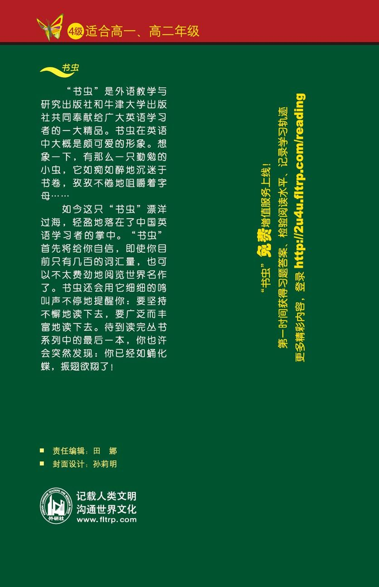